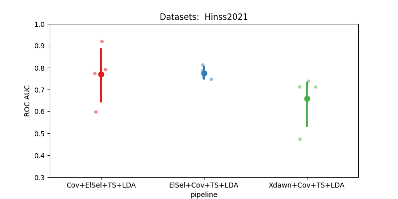

Note
Go to the end to download the full example code.
Hinss2021 classification example#
This example shows how to use the Hinss2021 dataset with the resting state paradigm.
In this example, we aim to determine the most effective channel selection strategy
for the moabb.datasets.Hinss2021 dataset.
The pipelines under consideration are:
Xdawn
Electrode selection based on time epochs data
Electrode selection based on covariance matrices
# License: BSD (3-clause)
import warnings
import numpy as np
import seaborn as sns
from matplotlib import pyplot as plt
from pyriemann.channelselection import ElectrodeSelection
from pyriemann.estimation import Covariances
from pyriemann.spatialfilters import Xdawn
from pyriemann.tangentspace import TangentSpace
from sklearn.base import TransformerMixin
from sklearn.discriminant_analysis import LinearDiscriminantAnalysis as LDA
from sklearn.pipeline import make_pipeline
from moabb import set_log_level
from moabb.datasets import Hinss2021
from moabb.evaluations import CrossSessionEvaluation
from moabb.paradigms import RestingStateToP300Adapter
# Suppressing future and runtime warnings for cleaner output
warnings.simplefilter(action="ignore", category=FutureWarning)
warnings.simplefilter(action="ignore", category=RuntimeWarning)
set_log_level("info")
Create util transformer#
Let’s create a scikit transformer mixin, that will select electrodes based on the covariance information
class EpochSelectChannel(TransformerMixin):
"""Select channels based on covariance information."""
def __init__(self, n_chan, cov_est):
self._chs_idx = None
self.n_chan = n_chan
self.cov_est = cov_est
def fit(self, X, _y=None):
# Get the covariances of the channels for each epoch.
covs = Covariances(estimator=self.cov_est).fit_transform(X)
# Get the average covariance between the channels
m = np.mean(covs, axis=0)
# Select the `n_chan` channels having the maximum covariances.
indices = np.unravel_index(
np.argpartition(m, -self.n_chan, axis=None)[-self.n_chan :], m.shape
)
# We will keep only these channels for the transform step.
self._chs_idx = np.unique(indices)
return self
def transform(self, X):
return X[:, self._chs_idx, :]
Initialization Process#
Define the experimental paradigm object (RestingState)
Load the datasets
Select a subset of subjects and specific events for analysis
# Here we define the mne events for the RestingState paradigm.
events = dict(easy=2, diff=3)
# The paradigm is adapted to the P300 paradigm.
paradigm = RestingStateToP300Adapter(events=events, tmin=0, tmax=0.5)
# We define a list with the dataset to use
datasets = [Hinss2021()]
# To reduce the computation time in the example, we will only use the
# first two subjects.
n__subjects = 2
title = "Datasets: "
for dataset in datasets:
title = title + " " + dataset.code
dataset.subject_list = dataset.subject_list[:n__subjects]
Create Pipelines#
Pipelines must be a dict of scikit-learning pipeline transformer.
pipelines = {}
pipelines["Xdawn+Cov+TS+LDA"] = make_pipeline(
Xdawn(nfilter=4), Covariances(estimator="lwf"), TangentSpace(), LDA()
)
pipelines["Cov+ElSel+TS+LDA"] = make_pipeline(
Covariances(estimator="lwf"), ElectrodeSelection(nelec=8), TangentSpace(), LDA()
)
# Pay attention here that the channel selection took place before computing the covariances:
# It is done on time epochs.
pipelines["ElSel+Cov+TS+LDA"] = make_pipeline(
EpochSelectChannel(n_chan=8, cov_est="lwf"),
Covariances(estimator="lwf"),
TangentSpace(),
LDA(),
)
Run evaluation#
Compare the pipeline using a cross session evaluation.
# Here should be cross-session
evaluation = CrossSessionEvaluation(
paradigm=paradigm,
datasets=datasets,
overwrite=False,
)
results = evaluation.process(pipelines)
Hinss2021-CrossSession: 0%| | 0/2 [00:00<?, ?it/s]
Hinss2021-CrossSession: 50%|█████ | 1/2 [00:18<00:18, 18.69s/it]
0%| | 0.00/181M [00:00<?, ?B/s]
0%| | 12.3k/181M [00:00<41:56, 72.0kB/s]
0%| | 39.9k/181M [00:00<22:04, 137kB/s]
0%| | 97.3k/181M [00:00<12:04, 250kB/s]
0%| | 136k/181M [00:00<11:45, 257kB/s]
0%| | 229k/181M [00:00<07:40, 393kB/s]
0%| | 358k/181M [00:00<05:23, 558kB/s]
0%| | 428k/181M [00:01<05:40, 531kB/s]
0%| | 543k/181M [00:01<04:55, 611kB/s]
0%|▏ | 624k/181M [00:01<05:04, 593kB/s]
0%|▏ | 722k/181M [00:01<04:52, 617kB/s]
0%|▏ | 804k/181M [00:01<05:00, 600kB/s]
0%|▏ | 886k/181M [00:01<05:06, 587kB/s]
1%|▏ | 1.00M/181M [00:01<04:38, 647kB/s]
1%|▏ | 1.07M/181M [00:02<05:07, 586kB/s]
1%|▎ | 1.22M/181M [00:02<04:08, 723kB/s]
1%|▎ | 1.35M/181M [00:02<03:51, 775kB/s]
1%|▎ | 1.45M/181M [00:02<04:02, 742kB/s]
1%|▎ | 1.61M/181M [00:02<03:29, 855kB/s]
1%|▎ | 1.71M/181M [00:02<03:44, 800kB/s]
1%|▍ | 1.86M/181M [00:02<03:27, 862kB/s]
1%|▍ | 2.00M/181M [00:03<03:18, 903kB/s]
1%|▍ | 2.10M/181M [00:03<03:34, 834kB/s]
1%|▍ | 2.30M/181M [00:03<03:01, 985kB/s]
1%|▌ | 2.46M/181M [00:03<02:54, 1.02MB/s]
1%|▌ | 2.62M/181M [00:03<02:49, 1.05MB/s]
2%|▌ | 2.76M/181M [00:03<02:57, 1.00MB/s]
2%|▌ | 2.87M/181M [00:03<03:10, 938kB/s]
2%|▋ | 3.02M/181M [00:04<03:06, 956kB/s]
2%|▋ | 3.25M/181M [00:04<02:36, 1.14MB/s]
2%|▋ | 3.44M/181M [00:04<02:28, 1.20MB/s]
2%|▋ | 3.57M/181M [00:04<02:40, 1.11MB/s]
2%|▊ | 3.74M/181M [00:04<02:39, 1.11MB/s]
2%|▊ | 3.85M/181M [00:04<02:56, 1.01MB/s]
2%|▊ | 4.02M/181M [00:05<02:49, 1.05MB/s]
2%|▉ | 4.13M/181M [00:05<03:03, 965kB/s]
2%|▉ | 4.23M/181M [00:05<03:22, 875kB/s]
2%|▉ | 4.41M/181M [00:05<02:59, 982kB/s]
2%|▉ | 4.51M/181M [00:05<03:18, 889kB/s]
3%|█ | 4.65M/181M [00:05<03:11, 922kB/s]
3%|█ | 4.80M/181M [00:05<03:06, 947kB/s]
3%|█ | 4.90M/181M [00:06<03:23, 865kB/s]
3%|█ | 5.05M/181M [00:06<03:14, 907kB/s]
3%|█ | 5.24M/181M [00:06<02:49, 1.04MB/s]
3%|█▏ | 5.35M/181M [00:06<03:07, 938kB/s]
3%|█▏ | 5.44M/181M [00:06<03:26, 849kB/s]
3%|█▏ | 5.52M/181M [00:06<03:48, 769kB/s]
3%|█▏ | 5.63M/181M [00:06<03:49, 764kB/s]
3%|█▏ | 5.71M/181M [00:07<04:13, 692kB/s]
3%|█▏ | 5.80M/181M [00:07<04:26, 659kB/s]
3%|█▎ | 6.06M/181M [00:07<02:55, 998kB/s]
3%|█▎ | 6.19M/181M [00:07<03:01, 965kB/s]
4%|█▎ | 6.39M/181M [00:07<02:43, 1.07MB/s]
4%|█▍ | 6.58M/181M [00:07<02:32, 1.14MB/s]
4%|█▍ | 6.70M/181M [00:07<02:48, 1.04MB/s]
4%|█▍ | 6.80M/181M [00:08<03:05, 937kB/s]
4%|█▍ | 6.89M/181M [00:08<03:24, 850kB/s]
4%|█▌ | 6.98M/181M [00:08<03:46, 770kB/s]
4%|█▌ | 7.06M/181M [00:08<04:08, 699kB/s]
4%|█▌ | 7.15M/181M [00:08<04:12, 688kB/s]
4%|█▌ | 7.24M/181M [00:08<04:28, 647kB/s]
4%|█▌ | 7.42M/181M [00:08<03:31, 822kB/s]
4%|█▋ | 7.86M/181M [00:09<01:57, 1.48MB/s]
4%|█▋ | 8.01M/181M [00:09<02:09, 1.34MB/s]
4%|█▋ | 8.14M/181M [00:09<02:22, 1.21MB/s]
5%|█▋ | 8.28M/181M [00:09<02:31, 1.14MB/s]
5%|█▊ | 8.43M/181M [00:09<02:36, 1.10MB/s]
5%|█▊ | 8.56M/181M [00:09<02:45, 1.04MB/s]
5%|█▊ | 8.67M/181M [00:09<03:02, 943kB/s]
5%|█▊ | 8.87M/181M [00:10<02:39, 1.08MB/s]
5%|█▉ | 9.00M/181M [00:10<02:47, 1.03MB/s]
5%|█▉ | 9.13M/181M [00:10<02:54, 986kB/s]
5%|█▉ | 9.26M/181M [00:10<02:59, 959kB/s]
5%|██ | 9.36M/181M [00:10<03:17, 871kB/s]
5%|██ | 9.62M/181M [00:10<02:29, 1.15MB/s]
5%|██ | 9.74M/181M [00:11<02:45, 1.04MB/s]
5%|██ | 9.84M/181M [00:11<03:02, 941kB/s]
6%|██▏ | 10.0M/181M [00:11<02:54, 979kB/s]
6%|██▏ | 10.2M/181M [00:11<02:47, 1.02MB/s]
6%|██▏ | 10.3M/181M [00:11<03:05, 923kB/s]
6%|██▏ | 10.4M/181M [00:11<03:08, 904kB/s]
6%|██▎ | 10.6M/181M [00:11<02:56, 968kB/s]
6%|██▎ | 10.9M/181M [00:12<02:03, 1.38MB/s]
6%|██▎ | 11.0M/181M [00:12<02:16, 1.25MB/s]
6%|██▎ | 11.3M/181M [00:12<02:04, 1.36MB/s]
6%|██▍ | 11.4M/181M [00:12<02:15, 1.25MB/s]
7%|██▌ | 11.9M/181M [00:12<01:28, 1.91MB/s]
7%|██▌ | 12.1M/181M [00:12<01:37, 1.73MB/s]
7%|██▌ | 12.3M/181M [00:12<01:48, 1.56MB/s]
7%|██▌ | 12.5M/181M [00:13<02:34, 1.09MB/s]
7%|██▋ | 12.6M/181M [00:13<02:41, 1.04MB/s]
7%|██▋ | 12.7M/181M [00:13<02:52, 977kB/s]
7%|██▊ | 12.8M/181M [00:13<03:05, 906kB/s]
7%|██▊ | 12.9M/181M [00:13<03:02, 920kB/s]
7%|██▊ | 13.2M/181M [00:13<02:20, 1.20MB/s]
7%|██▊ | 13.5M/181M [00:14<01:59, 1.40MB/s]
8%|██▊ | 13.6M/181M [00:14<02:11, 1.28MB/s]
8%|██▉ | 13.8M/181M [00:14<02:24, 1.16MB/s]
8%|██▉ | 13.9M/181M [00:14<02:38, 1.06MB/s]
8%|███ | 14.0M/181M [00:14<02:54, 958kB/s]
8%|███ | 14.1M/181M [00:14<03:11, 871kB/s]
8%|███ | 14.2M/181M [00:14<03:28, 799kB/s]
8%|███ | 14.3M/181M [00:15<03:39, 760kB/s]
8%|███ | 14.5M/181M [00:15<02:40, 1.04MB/s]
8%|███ | 14.7M/181M [00:15<02:27, 1.12MB/s]
8%|███ | 14.8M/181M [00:15<02:43, 1.02MB/s]
8%|███▏ | 14.9M/181M [00:15<03:00, 921kB/s]
8%|███▏ | 15.0M/181M [00:15<03:18, 834kB/s]
8%|███▎ | 15.1M/181M [00:15<03:38, 761kB/s]
8%|███▎ | 15.2M/181M [00:16<03:27, 798kB/s]
8%|███▎ | 15.3M/181M [00:16<03:38, 760kB/s]
9%|███▎ | 15.5M/181M [00:16<03:21, 822kB/s]
9%|███▎ | 15.6M/181M [00:16<03:08, 876kB/s]
9%|███▍ | 15.8M/181M [00:16<03:08, 876kB/s]
9%|███▍ | 15.9M/181M [00:16<03:22, 815kB/s]
9%|███▍ | 16.0M/181M [00:17<03:25, 805kB/s]
9%|███▍ | 16.1M/181M [00:17<03:03, 898kB/s]
9%|███▍ | 16.2M/181M [00:17<03:22, 814kB/s]
9%|███▌ | 16.3M/181M [00:17<03:29, 787kB/s]
9%|███▌ | 16.5M/181M [00:17<03:12, 853kB/s]
9%|███▌ | 16.6M/181M [00:17<03:25, 799kB/s]
9%|███▌ | 16.7M/181M [00:17<03:36, 760kB/s]
9%|███▌ | 16.8M/181M [00:18<03:44, 732kB/s]
9%|███▋ | 17.0M/181M [00:18<02:47, 982kB/s]
9%|███▋ | 17.1M/181M [00:18<03:04, 887kB/s]
10%|███▋ | 17.2M/181M [00:18<03:19, 822kB/s]
10%|███▋ | 17.5M/181M [00:18<02:20, 1.16MB/s]
10%|███▋ | 17.7M/181M [00:18<02:22, 1.15MB/s]
10%|███▋ | 17.8M/181M [00:18<02:37, 1.04MB/s]
10%|███▊ | 17.9M/181M [00:19<02:54, 938kB/s]
10%|███▉ | 18.0M/181M [00:19<03:05, 880kB/s]
10%|███▊ | 18.3M/181M [00:19<02:10, 1.25MB/s]
10%|███▊ | 18.4M/181M [00:19<02:23, 1.13MB/s]
10%|███▉ | 18.5M/181M [00:19<02:38, 1.03MB/s]
10%|████ | 18.7M/181M [00:19<02:54, 930kB/s]
10%|████ | 18.7M/181M [00:19<03:13, 838kB/s]
10%|████ | 18.8M/181M [00:20<03:23, 799kB/s]
10%|████ | 19.0M/181M [00:20<03:16, 826kB/s]
11%|████ | 19.1M/181M [00:20<03:28, 779kB/s]
11%|████▏ | 19.2M/181M [00:20<03:04, 879kB/s]
11%|████▏ | 19.4M/181M [00:20<02:56, 915kB/s]
11%|████▏ | 19.5M/181M [00:20<02:57, 909kB/s]
11%|████▏ | 19.6M/181M [00:21<02:58, 905kB/s]
11%|████▎ | 19.7M/181M [00:21<03:13, 834kB/s]
11%|████▎ | 19.9M/181M [00:21<02:43, 984kB/s]
11%|████▏ | 20.2M/181M [00:21<02:18, 1.16MB/s]
11%|████▎ | 20.3M/181M [00:21<02:34, 1.04MB/s]
11%|████▎ | 20.4M/181M [00:21<02:36, 1.03MB/s]
11%|████▎ | 20.6M/181M [00:21<02:32, 1.05MB/s]
11%|████▎ | 20.8M/181M [00:22<02:29, 1.07MB/s]
12%|████▍ | 20.9M/181M [00:22<02:22, 1.12MB/s]
12%|████▍ | 21.1M/181M [00:22<02:23, 1.12MB/s]
12%|████▍ | 21.2M/181M [00:22<02:37, 1.01MB/s]
12%|████▌ | 21.3M/181M [00:22<02:48, 948kB/s]
12%|████▌ | 21.6M/181M [00:22<02:17, 1.16MB/s]
12%|████▌ | 21.7M/181M [00:22<02:31, 1.05MB/s]
12%|████▋ | 21.8M/181M [00:23<02:47, 952kB/s]
12%|████▋ | 21.9M/181M [00:23<03:04, 864kB/s]
12%|████▋ | 22.0M/181M [00:23<03:23, 784kB/s]
12%|████▊ | 22.1M/181M [00:23<03:39, 723kB/s]
12%|████▊ | 22.2M/181M [00:23<03:45, 705kB/s]
12%|████▊ | 22.3M/181M [00:23<03:37, 729kB/s]
12%|████▊ | 22.4M/181M [00:23<03:23, 778kB/s]
12%|████▊ | 22.6M/181M [00:24<02:53, 911kB/s]
13%|████▉ | 22.8M/181M [00:24<02:42, 973kB/s]
13%|████▉ | 23.2M/181M [00:24<01:33, 1.68MB/s]
13%|████▉ | 23.4M/181M [00:24<01:43, 1.52MB/s]
13%|████▉ | 23.6M/181M [00:24<01:55, 1.36MB/s]
13%|████▉ | 23.7M/181M [00:24<02:07, 1.23MB/s]
13%|█████ | 23.9M/181M [00:24<01:57, 1.34MB/s]
13%|█████ | 24.1M/181M [00:25<02:03, 1.27MB/s]
13%|█████ | 24.2M/181M [00:25<02:12, 1.18MB/s]
13%|█████ | 24.4M/181M [00:25<02:26, 1.07MB/s]
14%|█████▎ | 24.5M/181M [00:25<02:42, 964kB/s]
14%|█████▎ | 24.6M/181M [00:25<02:57, 884kB/s]
14%|█████▏ | 24.8M/181M [00:25<02:11, 1.18MB/s]
14%|█████▏ | 25.0M/181M [00:26<02:25, 1.07MB/s]
14%|█████▎ | 25.2M/181M [00:26<02:12, 1.18MB/s]
14%|█████▎ | 25.3M/181M [00:26<02:22, 1.09MB/s]
14%|█████▍ | 25.4M/181M [00:26<02:37, 986kB/s]
14%|█████▍ | 25.5M/181M [00:26<02:54, 894kB/s]
14%|█████▍ | 25.9M/181M [00:26<01:50, 1.40MB/s]
14%|█████▍ | 26.0M/181M [00:26<02:02, 1.27MB/s]
14%|█████▍ | 26.2M/181M [00:27<02:14, 1.15MB/s]
15%|█████▌ | 26.3M/181M [00:27<02:28, 1.04MB/s]
15%|█████▌ | 26.4M/181M [00:27<02:32, 1.02MB/s]
15%|█████▌ | 26.6M/181M [00:27<02:27, 1.05MB/s]
15%|█████▋ | 26.7M/181M [00:27<02:42, 947kB/s]
15%|█████▊ | 26.8M/181M [00:27<02:59, 858kB/s]
15%|█████▊ | 26.9M/181M [00:27<02:59, 858kB/s]
15%|█████▋ | 27.3M/181M [00:28<01:55, 1.34MB/s]
15%|█████▊ | 27.5M/181M [00:28<01:55, 1.34MB/s]
15%|█████▊ | 27.6M/181M [00:28<02:07, 1.21MB/s]
15%|█████▊ | 27.7M/181M [00:28<02:20, 1.09MB/s]
15%|█████▉ | 27.8M/181M [00:28<02:34, 991kB/s]
15%|█████▊ | 28.0M/181M [00:28<02:30, 1.02MB/s]
16%|█████▉ | 28.2M/181M [00:28<02:26, 1.05MB/s]
16%|█████▉ | 28.3M/181M [00:29<02:27, 1.03MB/s]
16%|█████▉ | 28.5M/181M [00:29<02:20, 1.09MB/s]
16%|██████▏ | 28.6M/181M [00:29<02:34, 985kB/s]
16%|██████ | 28.8M/181M [00:29<02:22, 1.07MB/s]
16%|██████ | 29.1M/181M [00:29<01:52, 1.35MB/s]
16%|██████▏ | 29.2M/181M [00:29<02:04, 1.22MB/s]
16%|██████▏ | 29.3M/181M [00:29<02:17, 1.11MB/s]
16%|██████▏ | 29.4M/181M [00:30<02:31, 1.00MB/s]
16%|██████▎ | 29.5M/181M [00:30<02:46, 908kB/s]
16%|██████▍ | 29.6M/181M [00:30<03:03, 823kB/s]
16%|██████▍ | 29.7M/181M [00:30<03:22, 746kB/s]
17%|██████▍ | 29.9M/181M [00:30<02:34, 981kB/s]
17%|██████▍ | 30.0M/181M [00:30<02:50, 888kB/s]
17%|██████▍ | 30.1M/181M [00:30<03:03, 821kB/s]
17%|██████▌ | 30.3M/181M [00:31<02:59, 842kB/s]
17%|██████▌ | 30.4M/181M [00:31<02:42, 925kB/s]
17%|██████▍ | 30.6M/181M [00:31<02:19, 1.08MB/s]
17%|██████▍ | 30.9M/181M [00:31<01:50, 1.36MB/s]
17%|██████▌ | 31.1M/181M [00:31<01:56, 1.29MB/s]
17%|██████▌ | 31.4M/181M [00:31<01:41, 1.47MB/s]
17%|██████▌ | 31.5M/181M [00:32<01:52, 1.33MB/s]
17%|██████▋ | 31.7M/181M [00:32<02:04, 1.20MB/s]
18%|██████▋ | 31.8M/181M [00:32<02:17, 1.09MB/s]
18%|██████▋ | 32.0M/181M [00:32<02:10, 1.15MB/s]
18%|██████▋ | 32.1M/181M [00:32<02:19, 1.07MB/s]
18%|██████▊ | 32.3M/181M [00:32<02:09, 1.15MB/s]
18%|██████▊ | 32.5M/181M [00:32<01:56, 1.27MB/s]
18%|██████▊ | 32.6M/181M [00:33<02:08, 1.15MB/s]
18%|██████▊ | 32.8M/181M [00:33<02:22, 1.04MB/s]
18%|███████ | 32.9M/181M [00:33<02:36, 945kB/s]
18%|███████ | 33.0M/181M [00:33<02:52, 858kB/s]
18%|██████▉ | 33.2M/181M [00:33<02:18, 1.06MB/s]
18%|███████ | 33.4M/181M [00:33<02:08, 1.15MB/s]
19%|███████ | 33.6M/181M [00:33<01:53, 1.30MB/s]
19%|███████ | 33.8M/181M [00:34<02:06, 1.17MB/s]
19%|███████ | 33.9M/181M [00:34<02:18, 1.06MB/s]
19%|███████▏ | 34.2M/181M [00:34<01:40, 1.47MB/s]
19%|███████▎ | 34.6M/181M [00:34<01:20, 1.83MB/s]
19%|███████▎ | 34.9M/181M [00:34<01:23, 1.75MB/s]
19%|███████▍ | 35.2M/181M [00:34<01:17, 1.88MB/s]
20%|███████▍ | 35.4M/181M [00:34<01:25, 1.70MB/s]
20%|███████▍ | 35.5M/181M [00:35<01:34, 1.54MB/s]
20%|███████▍ | 35.7M/181M [00:35<02:15, 1.08MB/s]
20%|███████▌ | 35.8M/181M [00:35<02:15, 1.07MB/s]
20%|███████▌ | 36.1M/181M [00:35<02:03, 1.17MB/s]
20%|███████▌ | 36.2M/181M [00:35<02:14, 1.08MB/s]
20%|███████▊ | 36.3M/181M [00:35<02:25, 998kB/s]
20%|███████▊ | 36.4M/181M [00:36<02:38, 915kB/s]
20%|███████▊ | 36.5M/181M [00:36<02:52, 837kB/s]
20%|███████▉ | 36.6M/181M [00:36<03:09, 762kB/s]
20%|███████▉ | 36.7M/181M [00:36<02:47, 859kB/s]
20%|███████▉ | 36.9M/181M [00:36<02:34, 936kB/s]
20%|███████▉ | 37.0M/181M [00:36<02:48, 858kB/s]
20%|███████▉ | 37.1M/181M [00:37<02:59, 802kB/s]
21%|████████ | 37.3M/181M [00:37<02:41, 891kB/s]
21%|███████▊ | 37.5M/181M [00:37<02:11, 1.09MB/s]
21%|████████ | 37.6M/181M [00:37<02:25, 988kB/s]
21%|███████▉ | 37.8M/181M [00:37<02:10, 1.10MB/s]
21%|████████▏ | 37.9M/181M [00:37<02:23, 997kB/s]
21%|████████▏ | 38.0M/181M [00:37<02:38, 902kB/s]
21%|████████ | 38.2M/181M [00:38<02:22, 1.01MB/s]
21%|████████ | 38.4M/181M [00:38<02:13, 1.07MB/s]
21%|████████▎ | 38.5M/181M [00:38<02:24, 984kB/s]
21%|████████▏ | 38.7M/181M [00:38<02:02, 1.16MB/s]
21%|████████▏ | 38.9M/181M [00:38<02:08, 1.11MB/s]
22%|████████▏ | 39.0M/181M [00:38<02:15, 1.05MB/s]
22%|████████▏ | 39.1M/181M [00:38<02:21, 1.00MB/s]
22%|████████▍ | 39.2M/181M [00:39<02:36, 905kB/s]
22%|████████▍ | 39.4M/181M [00:39<02:27, 963kB/s]
22%|████████▎ | 39.6M/181M [00:39<02:03, 1.14MB/s]
22%|████████▎ | 39.7M/181M [00:39<02:16, 1.03MB/s]
22%|████████▌ | 39.9M/181M [00:39<02:22, 991kB/s]
22%|████████▌ | 40.0M/181M [00:39<02:26, 960kB/s]
22%|████████▋ | 40.1M/181M [00:39<02:41, 873kB/s]
22%|████████▋ | 40.2M/181M [00:40<02:57, 792kB/s]
22%|████████▋ | 40.3M/181M [00:40<02:46, 843kB/s]
22%|████████▋ | 40.4M/181M [00:40<02:58, 789kB/s]
22%|████████▋ | 40.6M/181M [00:40<02:38, 888kB/s]
23%|████████▊ | 40.8M/181M [00:40<02:21, 990kB/s]
23%|████████▊ | 40.9M/181M [00:40<02:20, 995kB/s]
23%|████████▊ | 41.0M/181M [00:40<02:35, 902kB/s]
23%|████████▊ | 41.1M/181M [00:41<02:36, 894kB/s]
23%|████████▉ | 41.3M/181M [00:41<02:27, 945kB/s]
23%|████████▉ | 41.5M/181M [00:41<02:25, 963kB/s]
23%|████████▉ | 41.6M/181M [00:41<02:40, 868kB/s]
23%|████████▉ | 41.7M/181M [00:41<02:27, 942kB/s]
23%|█████████ | 41.8M/181M [00:41<02:41, 861kB/s]
23%|█████████ | 42.0M/181M [00:42<02:33, 904kB/s]
23%|█████████ | 42.1M/181M [00:42<02:46, 833kB/s]
23%|█████████ | 42.1M/181M [00:42<03:04, 755kB/s]
23%|█████████ | 42.3M/181M [00:42<02:47, 827kB/s]
23%|█████████▏ | 42.4M/181M [00:42<02:57, 780kB/s]
23%|█████████▏ | 42.6M/181M [00:42<02:37, 879kB/s]
24%|█████████▏ | 42.6M/181M [00:42<02:49, 817kB/s]
24%|█████████▏ | 42.8M/181M [00:43<02:32, 907kB/s]
24%|█████████▎ | 43.0M/181M [00:43<02:22, 970kB/s]
24%|█████████ | 43.2M/181M [00:43<02:08, 1.08MB/s]
24%|█████████ | 43.4M/181M [00:43<01:49, 1.26MB/s]
24%|█████████▏ | 43.5M/181M [00:43<02:00, 1.14MB/s]
24%|█████████▏ | 43.7M/181M [00:43<02:13, 1.03MB/s]
24%|█████████▍ | 43.8M/181M [00:43<02:22, 963kB/s]
24%|█████████▍ | 43.9M/181M [00:44<02:25, 943kB/s]
24%|█████████▍ | 44.1M/181M [00:44<02:17, 995kB/s]
24%|█████████▎ | 44.2M/181M [00:44<02:12, 1.03MB/s]
24%|█████████▌ | 44.3M/181M [00:44<02:26, 932kB/s]
25%|█████████▌ | 44.4M/181M [00:44<02:41, 846kB/s]
25%|█████████▌ | 44.6M/181M [00:44<02:17, 992kB/s]
25%|█████████▋ | 44.7M/181M [00:44<02:31, 898kB/s]
25%|█████████▋ | 44.8M/181M [00:45<02:45, 826kB/s]
25%|█████████▋ | 44.9M/181M [00:45<02:55, 777kB/s]
25%|█████████▋ | 45.0M/181M [00:45<03:02, 745kB/s]
25%|█████████▌ | 45.4M/181M [00:45<01:37, 1.39MB/s]
25%|█████████▌ | 45.6M/181M [00:45<01:47, 1.26MB/s]
25%|█████████▌ | 45.7M/181M [00:45<01:53, 1.20MB/s]
25%|█████████▋ | 46.0M/181M [00:45<01:38, 1.37MB/s]
25%|█████████▋ | 46.1M/181M [00:46<01:48, 1.24MB/s]
26%|█████████▋ | 46.3M/181M [00:46<01:59, 1.13MB/s]
26%|█████████▋ | 46.4M/181M [00:46<02:07, 1.05MB/s]
26%|██████████ | 46.5M/181M [00:46<02:21, 953kB/s]
26%|██████████ | 46.6M/181M [00:46<02:35, 864kB/s]
26%|█████████▊ | 46.8M/181M [00:46<02:06, 1.06MB/s]
26%|██████████ | 46.9M/181M [00:46<02:19, 961kB/s]
26%|█████████▉ | 47.1M/181M [00:47<01:58, 1.13MB/s]
26%|█████████▉ | 47.3M/181M [00:47<02:11, 1.02MB/s]
26%|██████████▏ | 47.4M/181M [00:47<02:20, 950kB/s]
26%|█████████▉ | 47.5M/181M [00:47<02:13, 1.00MB/s]
26%|██████████▎ | 47.6M/181M [00:47<02:27, 905kB/s]
26%|██████████ | 47.8M/181M [00:47<02:09, 1.03MB/s]
27%|██████████ | 48.1M/181M [00:48<01:48, 1.22MB/s]
27%|██████████ | 48.2M/181M [00:48<02:00, 1.11MB/s]
27%|██████████▏ | 48.4M/181M [00:48<01:51, 1.19MB/s]
27%|██████████▏ | 48.5M/181M [00:48<02:00, 1.10MB/s]
27%|██████████▍ | 48.6M/181M [00:48<02:13, 994kB/s]
27%|██████████▍ | 48.7M/181M [00:48<02:26, 901kB/s]
27%|██████████▌ | 48.9M/181M [00:48<02:26, 900kB/s]
27%|██████████▌ | 49.0M/181M [00:49<02:16, 964kB/s]
27%|██████████▎ | 49.2M/181M [00:49<02:10, 1.01MB/s]
27%|██████████▋ | 49.3M/181M [00:49<02:15, 974kB/s]
27%|██████████▋ | 49.4M/181M [00:49<02:29, 883kB/s]
27%|██████████▋ | 49.6M/181M [00:49<02:34, 851kB/s]
27%|██████████▋ | 49.7M/181M [00:49<02:32, 863kB/s]
28%|██████████▋ | 49.8M/181M [00:49<02:19, 940kB/s]
28%|██████████▊ | 49.9M/181M [00:50<02:33, 856kB/s]
28%|██████████▊ | 50.1M/181M [00:50<02:11, 993kB/s]
28%|██████████▊ | 50.2M/181M [00:50<02:25, 899kB/s]
28%|██████████▊ | 50.4M/181M [00:50<02:31, 863kB/s]
28%|██████████▉ | 50.5M/181M [00:50<02:19, 937kB/s]
28%|██████████▉ | 50.6M/181M [00:50<02:32, 857kB/s]
28%|██████████▉ | 50.7M/181M [00:50<02:42, 801kB/s]
28%|██████████▉ | 50.9M/181M [00:51<02:25, 896kB/s]
28%|██████████▋ | 51.1M/181M [00:51<01:55, 1.13MB/s]
28%|██████████▊ | 51.2M/181M [00:51<02:07, 1.02MB/s]
28%|███████████ | 51.3M/181M [00:51<02:20, 924kB/s]
28%|███████████ | 51.4M/181M [00:51<02:34, 840kB/s]
28%|███████████ | 51.5M/181M [00:51<02:44, 787kB/s]
29%|███████████▏ | 51.7M/181M [00:51<02:26, 886kB/s]
29%|███████████▏ | 51.8M/181M [00:52<02:37, 821kB/s]
29%|███████████▏ | 51.9M/181M [00:52<02:46, 776kB/s]
29%|███████████▏ | 52.0M/181M [00:52<02:53, 745kB/s]
29%|███████████▏ | 52.2M/181M [00:52<02:19, 922kB/s]
29%|███████████▎ | 52.3M/181M [00:52<02:32, 846kB/s]
29%|███████████▎ | 52.4M/181M [00:52<02:29, 860kB/s]
29%|███████████▎ | 52.5M/181M [00:53<02:27, 870kB/s]
29%|███████████▎ | 52.6M/181M [00:53<02:38, 808kB/s]
29%|███████████▎ | 52.8M/181M [00:53<02:40, 800kB/s]
29%|███████████▍ | 52.9M/181M [00:53<02:48, 761kB/s]
29%|███████████▍ | 53.1M/181M [00:53<02:12, 968kB/s]
29%|███████████▍ | 53.2M/181M [00:53<02:20, 910kB/s]
29%|███████████▍ | 53.3M/181M [00:53<02:32, 838kB/s]
30%|███████████▌ | 53.5M/181M [00:54<02:09, 989kB/s]
30%|███████████▎ | 53.7M/181M [00:54<01:49, 1.16MB/s]
30%|███████████▎ | 53.8M/181M [00:54<02:01, 1.05MB/s]
30%|███████████▌ | 53.9M/181M [00:54<02:13, 950kB/s]
30%|███████████▋ | 54.0M/181M [00:54<02:27, 861kB/s]
30%|███████████▋ | 54.1M/181M [00:54<02:42, 781kB/s]
30%|███████████▋ | 54.3M/181M [00:54<02:27, 857kB/s]
30%|███████████▋ | 54.3M/181M [00:55<02:43, 776kB/s]
30%|███████████▋ | 54.4M/181M [00:55<02:52, 736kB/s]
30%|███████████▋ | 54.5M/181M [00:55<02:56, 717kB/s]
30%|███████████▊ | 54.7M/181M [00:55<02:37, 802kB/s]
30%|███████████▊ | 54.8M/181M [00:55<02:38, 796kB/s]
30%|███████████▊ | 55.0M/181M [00:55<02:21, 892kB/s]
30%|███████████▊ | 55.1M/181M [00:55<02:26, 859kB/s]
31%|███████████▉ | 55.2M/181M [00:56<02:14, 935kB/s]
31%|███████████▉ | 55.3M/181M [00:56<02:26, 856kB/s]
31%|███████████▉ | 55.4M/181M [00:56<02:36, 801kB/s]
31%|███████████▉ | 55.5M/181M [00:56<02:44, 762kB/s]
31%|███████████▉ | 55.7M/181M [00:56<02:43, 768kB/s]
31%|███████████▋ | 55.9M/181M [00:56<02:00, 1.04MB/s]
31%|████████████ | 56.0M/181M [00:56<02:12, 941kB/s]
31%|███████████▊ | 56.4M/181M [00:57<01:28, 1.42MB/s]
31%|███████████▊ | 56.5M/181M [00:57<01:37, 1.28MB/s]
31%|███████████▉ | 56.7M/181M [00:57<01:40, 1.24MB/s]
31%|███████████▉ | 56.8M/181M [00:57<01:49, 1.14MB/s]
31%|███████████▉ | 56.9M/181M [00:57<02:00, 1.03MB/s]
32%|████████████ | 57.2M/181M [00:57<01:33, 1.32MB/s]
32%|████████████ | 57.6M/181M [00:58<01:14, 1.66MB/s]
32%|████████████ | 57.7M/181M [00:58<01:22, 1.50MB/s]
32%|████████████▏ | 57.9M/181M [00:58<01:31, 1.35MB/s]
32%|████████████▏ | 58.1M/181M [00:58<01:29, 1.37MB/s]
32%|████████████▏ | 58.3M/181M [00:58<01:24, 1.46MB/s]
32%|████████████▎ | 58.6M/181M [00:58<01:20, 1.52MB/s]
32%|████████████▎ | 58.7M/181M [00:58<01:28, 1.38MB/s]
33%|████████████▎ | 58.9M/181M [00:59<01:38, 1.25MB/s]
33%|████████████▍ | 59.0M/181M [00:59<01:48, 1.13MB/s]
33%|████████████▍ | 59.1M/181M [00:59<01:59, 1.02MB/s]
33%|████████████▊ | 59.2M/181M [00:59<02:11, 928kB/s]
33%|████████████▊ | 59.3M/181M [00:59<02:24, 842kB/s]
33%|████████████▊ | 59.4M/181M [00:59<02:36, 780kB/s]
33%|████████████▊ | 59.5M/181M [00:59<02:43, 744kB/s]
33%|████████████▊ | 59.6M/181M [01:00<02:48, 722kB/s]
33%|████████████▉ | 59.8M/181M [01:00<02:18, 875kB/s]
33%|████████████▉ | 59.9M/181M [01:00<02:22, 848kB/s]
33%|████████████▉ | 60.1M/181M [01:00<02:10, 927kB/s]
33%|████████████▉ | 60.2M/181M [01:00<02:22, 850kB/s]
33%|████████████▉ | 60.3M/181M [01:00<02:14, 898kB/s]
33%|████████████▋ | 60.6M/181M [01:00<01:40, 1.20MB/s]
34%|████████████▊ | 60.8M/181M [01:01<01:37, 1.24MB/s]
34%|████████████▊ | 60.9M/181M [01:01<01:47, 1.12MB/s]
34%|████████████▊ | 61.0M/181M [01:01<01:58, 1.01MB/s]
34%|█████████████▏ | 61.1M/181M [01:01<02:10, 921kB/s]
34%|█████████████▏ | 61.2M/181M [01:01<02:14, 890kB/s]
34%|█████████████▏ | 61.3M/181M [01:01<02:25, 825kB/s]
34%|█████████████▏ | 61.5M/181M [01:01<02:16, 878kB/s]
34%|█████████████▎ | 61.6M/181M [01:02<02:26, 815kB/s]
34%|█████████████▎ | 61.7M/181M [01:02<02:34, 772kB/s]
34%|█████████████▎ | 61.8M/181M [01:02<02:40, 742kB/s]
34%|█████████████▎ | 61.9M/181M [01:02<02:45, 721kB/s]
34%|█████████████▎ | 62.0M/181M [01:02<02:22, 838kB/s]
34%|█████████████▍ | 62.1M/181M [01:02<02:31, 787kB/s]
34%|█████████████▍ | 62.2M/181M [01:02<02:37, 753kB/s]
34%|█████████████▍ | 62.4M/181M [01:03<02:17, 863kB/s]
35%|█████████████▍ | 62.5M/181M [01:03<02:27, 805kB/s]
35%|█████████████▍ | 62.7M/181M [01:03<02:07, 931kB/s]
35%|█████████████▌ | 62.8M/181M [01:03<01:59, 987kB/s]
35%|█████████████▏ | 63.0M/181M [01:03<01:51, 1.06MB/s]
35%|█████████████▎ | 63.2M/181M [01:03<01:49, 1.08MB/s]
35%|█████████████▎ | 63.4M/181M [01:04<01:48, 1.09MB/s]
35%|█████████████▎ | 63.5M/181M [01:04<01:50, 1.06MB/s]
35%|█████████████▋ | 63.6M/181M [01:04<02:01, 963kB/s]
35%|█████████████▍ | 63.8M/181M [01:04<01:44, 1.13MB/s]
35%|█████████████▍ | 64.0M/181M [01:04<01:45, 1.11MB/s]
35%|█████████████▍ | 64.1M/181M [01:04<01:55, 1.02MB/s]
35%|█████████████▊ | 64.2M/181M [01:04<02:06, 921kB/s]
36%|█████████████▊ | 64.3M/181M [01:05<02:09, 903kB/s]
36%|█████████████▉ | 64.4M/181M [01:05<02:14, 867kB/s]
36%|█████████████▉ | 64.6M/181M [01:05<02:03, 942kB/s]
36%|█████████████▉ | 64.8M/181M [01:05<01:57, 991kB/s]
36%|█████████████▉ | 64.9M/181M [01:05<02:05, 928kB/s]
36%|█████████████▋ | 65.2M/181M [01:05<01:27, 1.32MB/s]
36%|█████████████▋ | 65.4M/181M [01:05<01:27, 1.32MB/s]
36%|█████████████▊ | 65.6M/181M [01:06<01:31, 1.26MB/s]
36%|█████████████▊ | 65.7M/181M [01:06<01:40, 1.15MB/s]
36%|█████████████▊ | 65.8M/181M [01:06<01:50, 1.04MB/s]
37%|█████████████▉ | 66.1M/181M [01:06<01:24, 1.36MB/s]
37%|█████████████▉ | 66.3M/181M [01:06<01:29, 1.29MB/s]
37%|█████████████▉ | 66.5M/181M [01:06<01:32, 1.24MB/s]
37%|█████████████▉ | 66.6M/181M [01:06<01:35, 1.20MB/s]
37%|██████████████ | 66.8M/181M [01:07<01:37, 1.18MB/s]
37%|██████████████ | 66.9M/181M [01:07<01:47, 1.06MB/s]
37%|██████████████▍ | 67.0M/181M [01:07<01:58, 963kB/s]
37%|██████████████▍ | 67.1M/181M [01:07<02:10, 874kB/s]
37%|██████████████▍ | 67.3M/181M [01:07<01:58, 958kB/s]
37%|██████████████▏ | 67.5M/181M [01:07<01:49, 1.04MB/s]
37%|██████████████▏ | 67.7M/181M [01:07<01:32, 1.23MB/s]
37%|██████████████▏ | 67.8M/181M [01:08<01:42, 1.11MB/s]
38%|██████████████▎ | 67.9M/181M [01:08<01:52, 1.01MB/s]
38%|██████████████▎ | 68.1M/181M [01:08<01:46, 1.06MB/s]
38%|██████████████▋ | 68.2M/181M [01:08<01:58, 953kB/s]
38%|██████████████▎ | 68.4M/181M [01:08<01:40, 1.12MB/s]
38%|██████████████▍ | 68.6M/181M [01:08<01:47, 1.05MB/s]
38%|██████████████▍ | 68.7M/181M [01:09<01:44, 1.07MB/s]
38%|██████████████▊ | 68.8M/181M [01:09<01:54, 984kB/s]
38%|██████████████▊ | 68.9M/181M [01:09<02:05, 893kB/s]
38%|██████████████▊ | 69.0M/181M [01:09<02:16, 822kB/s]
38%|██████████████▌ | 69.3M/181M [01:09<01:34, 1.18MB/s]
38%|██████████████▌ | 69.5M/181M [01:09<01:44, 1.06MB/s]
39%|██████████████▋ | 69.8M/181M [01:09<01:21, 1.37MB/s]
39%|██████████████▋ | 69.9M/181M [01:10<01:29, 1.24MB/s]
39%|██████████████▋ | 70.1M/181M [01:10<01:33, 1.19MB/s]
39%|██████████████▋ | 70.2M/181M [01:10<01:43, 1.07MB/s]
39%|███████████████▏ | 70.3M/181M [01:10<01:53, 972kB/s]
39%|███████████████▏ | 70.4M/181M [01:10<02:05, 881kB/s]
39%|███████████████▏ | 70.5M/181M [01:10<02:08, 860kB/s]
39%|███████████████▏ | 70.6M/181M [01:10<02:17, 802kB/s]
39%|███████████████▏ | 70.7M/181M [01:11<02:07, 863kB/s]
39%|███████████████▎ | 70.9M/181M [01:11<01:53, 971kB/s]
39%|███████████████▎ | 71.0M/181M [01:11<02:04, 881kB/s]
39%|███████████████▎ | 71.1M/181M [01:11<02:09, 850kB/s]
39%|███████████████▎ | 71.3M/181M [01:11<01:49, 998kB/s]
39%|███████████████▍ | 71.5M/181M [01:11<01:53, 967kB/s]
40%|███████████████▍ | 71.6M/181M [01:11<01:55, 945kB/s]
40%|███████████████▍ | 71.7M/181M [01:12<02:07, 860kB/s]
40%|███████████████▍ | 71.8M/181M [01:12<02:05, 870kB/s]
40%|███████████████▍ | 71.9M/181M [01:12<02:14, 810kB/s]
40%|███████████████▌ | 72.1M/181M [01:12<01:56, 936kB/s]
40%|███████████████▌ | 72.2M/181M [01:12<02:02, 889kB/s]
40%|███████████████▌ | 72.3M/181M [01:12<02:12, 823kB/s]
40%|███████████████▌ | 72.4M/181M [01:12<02:19, 777kB/s]
40%|███████████████▌ | 72.5M/181M [01:13<02:25, 745kB/s]
40%|███████████████▋ | 72.7M/181M [01:13<02:07, 851kB/s]
40%|███████████████▋ | 72.8M/181M [01:13<01:56, 927kB/s]
40%|███████████████▋ | 73.0M/181M [01:13<02:02, 881kB/s]
40%|███████████████▋ | 73.1M/181M [01:13<02:01, 885kB/s]
40%|███████████████▊ | 73.2M/181M [01:13<02:06, 853kB/s]
40%|███████████████▊ | 73.3M/181M [01:13<02:09, 831kB/s]
41%|███████████████▊ | 73.5M/181M [01:14<01:49, 981kB/s]
41%|███████████████▍ | 73.7M/181M [01:14<01:45, 1.02MB/s]
41%|███████████████▍ | 73.8M/181M [01:14<01:42, 1.05MB/s]
41%|███████████████▌ | 74.0M/181M [01:14<01:40, 1.07MB/s]
41%|███████████████▉ | 74.1M/181M [01:14<01:50, 968kB/s]
41%|███████████████▌ | 74.4M/181M [01:14<01:29, 1.19MB/s]
41%|███████████████▋ | 74.6M/181M [01:15<01:26, 1.24MB/s]
41%|███████████████▋ | 74.7M/181M [01:15<01:35, 1.12MB/s]
41%|███████████████▋ | 74.8M/181M [01:15<01:45, 1.01MB/s]
41%|████████████████▏ | 74.9M/181M [01:15<01:56, 913kB/s]
41%|████████████████▏ | 75.0M/181M [01:15<02:08, 828kB/s]
41%|████████████████▏ | 75.1M/181M [01:15<01:57, 905kB/s]
42%|███████████████▊ | 75.4M/181M [01:15<01:36, 1.10MB/s]
42%|███████████████▊ | 75.5M/181M [01:16<01:38, 1.07MB/s]
42%|████████████████▎ | 75.6M/181M [01:16<01:48, 971kB/s]
42%|████████████████▎ | 75.8M/181M [01:16<01:45, 996kB/s]
42%|████████████████▎ | 75.9M/181M [01:16<01:56, 903kB/s]
42%|████████████████▍ | 76.0M/181M [01:16<01:49, 961kB/s]
42%|████████████████▍ | 76.1M/181M [01:16<02:00, 874kB/s]
42%|████████████████▍ | 76.2M/181M [01:16<02:08, 813kB/s]
42%|████████████████▍ | 76.4M/181M [01:17<02:10, 804kB/s]
42%|████████████████▍ | 76.4M/181M [01:17<02:17, 762kB/s]
42%|████████████████▌ | 76.6M/181M [01:17<02:00, 869kB/s]
42%|████████████████▌ | 76.7M/181M [01:17<02:03, 843kB/s]
42%|████████████████▌ | 76.9M/181M [01:17<02:01, 858kB/s]
42%|████████████████▌ | 77.0M/181M [01:17<02:10, 800kB/s]
43%|████████████████▌ | 77.1M/181M [01:17<02:05, 829kB/s]
43%|████████████████▋ | 77.3M/181M [01:18<01:53, 915kB/s]
43%|████████████████▋ | 77.4M/181M [01:18<01:54, 909kB/s]
43%|████████████████▋ | 77.5M/181M [01:18<02:04, 835kB/s]
43%|████████████████▋ | 77.6M/181M [01:18<02:11, 786kB/s]
43%|████████████████▋ | 77.7M/181M [01:18<02:17, 751kB/s]
43%|████████████████▊ | 77.8M/181M [01:18<02:22, 726kB/s]
43%|████████████████▊ | 78.0M/181M [01:18<01:45, 976kB/s]
43%|████████████████▊ | 78.1M/181M [01:19<01:48, 951kB/s]
43%|████████████████▊ | 78.2M/181M [01:19<01:54, 900kB/s]
43%|████████████████▉ | 78.4M/181M [01:19<01:46, 965kB/s]
43%|████████████████▉ | 78.5M/181M [01:19<01:56, 877kB/s]
43%|████████████████▉ | 78.6M/181M [01:19<02:06, 813kB/s]
43%|████████████████▉ | 78.7M/181M [01:19<02:12, 770kB/s]
44%|████████████████▉ | 78.9M/181M [01:20<02:01, 841kB/s]
44%|█████████████████ | 79.0M/181M [01:20<02:09, 790kB/s]
44%|█████████████████ | 79.0M/181M [01:20<02:15, 752kB/s]
44%|█████████████████ | 79.2M/181M [01:20<01:58, 861kB/s]
44%|█████████████████ | 79.3M/181M [01:20<02:01, 838kB/s]
44%|█████████████████ | 79.5M/181M [01:20<01:58, 855kB/s]
44%|█████████████████▏ | 79.6M/181M [01:20<01:57, 863kB/s]
44%|█████████████████▏ | 79.7M/181M [01:21<01:56, 872kB/s]
44%|█████████████████▏ | 79.8M/181M [01:21<02:04, 812kB/s]
44%|█████████████████▏ | 80.0M/181M [01:21<01:56, 867kB/s]
44%|█████████████████▏ | 80.1M/181M [01:21<02:05, 806kB/s]
44%|█████████████████▎ | 80.2M/181M [01:21<02:11, 766kB/s]
44%|█████████████████▎ | 80.3M/181M [01:21<01:51, 905kB/s]
44%|█████████████████▎ | 80.5M/181M [01:21<01:51, 902kB/s]
45%|████████████████▉ | 80.7M/181M [01:22<01:34, 1.07MB/s]
45%|████████████████▉ | 80.9M/181M [01:22<01:22, 1.22MB/s]
45%|█████████████████ | 81.0M/181M [01:22<01:31, 1.10MB/s]
45%|█████████████████▍ | 81.1M/181M [01:22<01:40, 995kB/s]
45%|█████████████████▌ | 81.3M/181M [01:22<01:40, 991kB/s]
45%|█████████████████ | 81.5M/181M [01:22<01:36, 1.03MB/s]
45%|█████████████████▌ | 81.6M/181M [01:22<01:40, 989kB/s]
45%|█████████████████▏ | 81.9M/181M [01:23<01:12, 1.36MB/s]
45%|█████████████████▏ | 82.0M/181M [01:23<01:20, 1.23MB/s]
45%|█████████████████▏ | 82.2M/181M [01:23<01:28, 1.12MB/s]
46%|█████████████████▎ | 82.5M/181M [01:23<01:12, 1.35MB/s]
46%|█████████████████▎ | 82.6M/181M [01:23<01:16, 1.28MB/s]
46%|█████████████████▎ | 82.7M/181M [01:23<01:24, 1.16MB/s]
46%|█████████████████▍ | 82.9M/181M [01:23<01:33, 1.05MB/s]
46%|█████████████████▍ | 83.3M/181M [01:24<00:57, 1.70MB/s]
46%|█████████████████▌ | 83.6M/181M [01:24<00:58, 1.66MB/s]
46%|█████████████████▌ | 83.7M/181M [01:24<01:04, 1.50MB/s]
46%|█████████████████▌ | 83.9M/181M [01:24<01:11, 1.36MB/s]
46%|█████████████████▋ | 84.0M/181M [01:24<01:18, 1.23MB/s]
46%|█████████████████▋ | 84.1M/181M [01:24<01:26, 1.12MB/s]
47%|█████████████████▋ | 84.3M/181M [01:24<01:35, 1.01MB/s]
47%|██████████████████▏ | 84.4M/181M [01:25<02:16, 707kB/s]
47%|██████████████████▏ | 84.4M/181M [01:25<02:21, 681kB/s]
47%|██████████████████▏ | 84.6M/181M [01:25<02:01, 795kB/s]
47%|██████████████████▎ | 84.8M/181M [01:25<01:49, 883kB/s]
47%|██████████████████▎ | 84.9M/181M [01:25<01:57, 822kB/s]
47%|██████████████████▎ | 85.0M/181M [01:26<01:49, 875kB/s]
47%|█████████████████▉ | 85.2M/181M [01:26<01:35, 1.01MB/s]
47%|█████████████████▉ | 85.4M/181M [01:26<01:26, 1.10MB/s]
47%|█████████████████▉ | 85.5M/181M [01:26<01:31, 1.04MB/s]
47%|██████████████████▍ | 85.6M/181M [01:26<01:40, 947kB/s]
47%|██████████████████▍ | 85.7M/181M [01:26<01:50, 860kB/s]
47%|██████████████████▍ | 85.8M/181M [01:26<01:59, 794kB/s]
47%|██████████████████▌ | 85.9M/181M [01:27<02:05, 755kB/s]
48%|██████████████████▌ | 86.1M/181M [01:27<01:54, 830kB/s]
48%|██████████████████▌ | 86.2M/181M [01:27<01:47, 883kB/s]
48%|██████████████████▌ | 86.3M/181M [01:27<01:55, 820kB/s]
48%|██████████████████▋ | 86.5M/181M [01:27<01:40, 940kB/s]
48%|██████████████████▋ | 86.6M/181M [01:27<01:49, 859kB/s]
48%|██████████████████▋ | 86.7M/181M [01:27<01:57, 803kB/s]
48%|██████████████████▋ | 86.8M/181M [01:28<02:03, 763kB/s]
48%|██████████████████▋ | 86.9M/181M [01:28<01:57, 803kB/s]
48%|██████████████████▎ | 87.2M/181M [01:28<01:31, 1.03MB/s]
48%|██████████████████▊ | 87.3M/181M [01:28<01:40, 932kB/s]
48%|██████████████████▎ | 87.5M/181M [01:28<01:29, 1.04MB/s]
48%|██████████████████▍ | 87.7M/181M [01:28<01:20, 1.16MB/s]
48%|██████████████████▍ | 87.8M/181M [01:28<01:26, 1.08MB/s]
49%|██████████████████▉ | 87.9M/181M [01:29<01:35, 980kB/s]
49%|██████████████████▉ | 88.0M/181M [01:29<01:45, 886kB/s]
49%|██████████████████▉ | 88.1M/181M [01:29<01:55, 803kB/s]
49%|██████████████████▉ | 88.2M/181M [01:29<02:02, 760kB/s]
49%|███████████████████ | 88.3M/181M [01:29<02:06, 733kB/s]
49%|███████████████████ | 88.5M/181M [01:29<01:44, 883kB/s]
49%|███████████████████ | 88.6M/181M [01:29<01:37, 951kB/s]
49%|███████████████████ | 88.8M/181M [01:30<01:38, 935kB/s]
49%|███████████████████▏ | 88.9M/181M [01:30<01:47, 856kB/s]
49%|███████████████████▏ | 89.0M/181M [01:30<01:55, 800kB/s]
49%|███████████████████▏ | 89.1M/181M [01:30<01:42, 893kB/s]
49%|███████████████████▏ | 89.3M/181M [01:30<01:35, 960kB/s]
49%|██████████████████▊ | 89.5M/181M [01:30<01:30, 1.01MB/s]
49%|███████████████████▎ | 89.6M/181M [01:31<01:41, 905kB/s]
50%|███████████████████▎ | 89.7M/181M [01:31<01:38, 927kB/s]
50%|███████████████████▎ | 89.8M/181M [01:31<01:47, 850kB/s]
50%|███████████████████▎ | 89.9M/181M [01:31<01:49, 829kB/s]
50%|███████████████████▍ | 90.1M/181M [01:31<01:39, 916kB/s]
50%|███████████████████▍ | 90.2M/181M [01:31<01:48, 841kB/s]
50%|███████████████████▍ | 90.3M/181M [01:31<01:45, 857kB/s]
50%|███████████████████▍ | 90.4M/181M [01:32<01:53, 801kB/s]
50%|███████████████████ | 90.6M/181M [01:32<01:27, 1.03MB/s]
50%|███████████████████ | 90.9M/181M [01:32<01:13, 1.22MB/s]
50%|███████████████████ | 91.0M/181M [01:32<01:21, 1.11MB/s]
50%|███████████████████ | 91.1M/181M [01:32<01:29, 1.00MB/s]
50%|███████████████████▋ | 91.2M/181M [01:32<01:38, 908kB/s]
50%|███████████████████▋ | 91.3M/181M [01:32<01:49, 823kB/s]
50%|███████████████████▋ | 91.4M/181M [01:33<01:42, 878kB/s]
51%|███████████████████▏ | 91.7M/181M [01:33<01:19, 1.12MB/s]
51%|███████████████████▎ | 91.9M/181M [01:33<01:17, 1.15MB/s]
51%|███████████████████▎ | 92.0M/181M [01:33<01:25, 1.04MB/s]
51%|███████████████████▎ | 92.1M/181M [01:33<01:26, 1.03MB/s]
51%|███████████████████▎ | 92.3M/181M [01:33<01:24, 1.05MB/s]
51%|███████████████████▉ | 92.4M/181M [01:33<01:28, 996kB/s]
51%|███████████████████▉ | 92.5M/181M [01:34<01:37, 904kB/s]
51%|███████████████████▍ | 92.8M/181M [01:34<01:20, 1.10MB/s]
51%|███████████████████▌ | 93.0M/181M [01:34<01:09, 1.27MB/s]
51%|███████████████████▌ | 93.2M/181M [01:34<01:09, 1.26MB/s]
52%|███████████████████▌ | 93.3M/181M [01:34<01:12, 1.21MB/s]
52%|███████████████████▋ | 93.6M/181M [01:34<01:06, 1.32MB/s]
52%|███████████████████▋ | 93.8M/181M [01:34<01:02, 1.39MB/s]
52%|███████████████████▋ | 93.9M/181M [01:35<01:09, 1.26MB/s]
52%|███████████████████▋ | 94.1M/181M [01:35<01:16, 1.14MB/s]
52%|████████████████████▎ | 94.2M/181M [01:35<01:49, 794kB/s]
52%|███████████████████▊ | 94.5M/181M [01:35<01:17, 1.11MB/s]
52%|███████████████████▊ | 94.6M/181M [01:35<01:19, 1.08MB/s]
52%|███████████████████▉ | 94.8M/181M [01:36<01:25, 1.01MB/s]
52%|████████████████████▍ | 94.9M/181M [01:36<01:32, 932kB/s]
52%|████████████████████▍ | 95.0M/181M [01:36<01:39, 863kB/s]
53%|████████████████████▍ | 95.1M/181M [01:36<01:38, 873kB/s]
53%|████████████████████▌ | 95.2M/181M [01:36<01:41, 847kB/s]
53%|████████████████████▌ | 95.3M/181M [01:36<01:47, 795kB/s]
53%|████████████████████▌ | 95.4M/181M [01:36<01:52, 758kB/s]
53%|████████████████████▌ | 95.5M/181M [01:37<01:57, 730kB/s]
53%|████████████████████▌ | 95.7M/181M [01:37<01:27, 980kB/s]
53%|████████████████████▋ | 95.8M/181M [01:37<01:35, 889kB/s]
53%|████████████████████▏ | 96.1M/181M [01:37<01:18, 1.09MB/s]
53%|████████████████████▋ | 96.2M/181M [01:37<01:26, 985kB/s]
53%|████████████████████▎ | 96.5M/181M [01:37<01:01, 1.37MB/s]
53%|████████████████████▎ | 96.6M/181M [01:37<01:08, 1.24MB/s]
54%|████████████████████▎ | 96.9M/181M [01:38<00:59, 1.42MB/s]
54%|████████████████████▎ | 97.0M/181M [01:38<01:05, 1.29MB/s]
54%|████████████████████▍ | 97.2M/181M [01:38<01:12, 1.16MB/s]
54%|████████████████████▍ | 97.3M/181M [01:38<01:19, 1.05MB/s]
54%|████████████████████▉ | 97.4M/181M [01:38<01:27, 955kB/s]
54%|████████████████████▉ | 97.5M/181M [01:38<01:36, 866kB/s]
54%|█████████████████████ | 97.6M/181M [01:38<01:46, 785kB/s]
54%|████████████████████▌ | 97.8M/181M [01:39<01:22, 1.01MB/s]
54%|████████████████████▌ | 98.1M/181M [01:39<01:03, 1.31MB/s]
54%|████████████████████▌ | 98.2M/181M [01:39<01:10, 1.18MB/s]
54%|████████████████████▋ | 98.4M/181M [01:39<01:17, 1.07MB/s]
54%|████████████████████▋ | 98.6M/181M [01:39<01:08, 1.21MB/s]
55%|████████████████████▋ | 98.8M/181M [01:39<01:01, 1.35MB/s]
55%|████████████████████▊ | 99.0M/181M [01:39<01:07, 1.22MB/s]
55%|████████████████████▊ | 99.1M/181M [01:40<01:14, 1.11MB/s]
55%|████████████████████▊ | 99.2M/181M [01:40<01:21, 1.00MB/s]
55%|█████████████████████▍ | 99.3M/181M [01:40<01:30, 908kB/s]
55%|█████████████████████▍ | 99.4M/181M [01:40<01:39, 823kB/s]
55%|█████████████████████▍ | 99.6M/181M [01:40<01:27, 936kB/s]
55%|█████████████████████▍ | 99.7M/181M [01:40<01:28, 921kB/s]
55%|█████████████████████▌ | 100M/181M [01:40<01:01, 1.31MB/s]
55%|█████████████████████▌ | 100M/181M [01:41<01:08, 1.19MB/s]
55%|█████████████████████▌ | 100M/181M [01:41<01:14, 1.08MB/s]
56%|█████████████████████▋ | 101M/181M [01:41<00:43, 1.84MB/s]
56%|█████████████████████▋ | 101M/181M [01:41<00:48, 1.67MB/s]
56%|█████████████████████▊ | 101M/181M [01:41<00:52, 1.51MB/s]
56%|█████████████████████▊ | 101M/181M [01:41<00:58, 1.37MB/s]
56%|█████████████████████▊ | 101M/181M [01:42<01:04, 1.24MB/s]
56%|█████████████████████▊ | 102M/181M [01:42<01:10, 1.12MB/s]
56%|█████████████████████▉ | 102M/181M [01:42<01:18, 1.02MB/s]
56%|██████████████████████▍ | 102M/181M [01:42<01:25, 923kB/s]
56%|██████████████████████▌ | 102M/181M [01:42<01:34, 837kB/s]
56%|██████████████████████▌ | 102M/181M [01:42<01:34, 834kB/s]
56%|██████████████████████▌ | 102M/181M [01:42<01:40, 785kB/s]
56%|██████████████████████▌ | 102M/181M [01:43<01:36, 817kB/s]
57%|██████████████████████▌ | 102M/181M [01:43<01:42, 772kB/s]
57%|██████████████████████▌ | 102M/181M [01:43<01:46, 741kB/s]
57%|██████████████████████▋ | 103M/181M [01:43<01:31, 855kB/s]
57%|██████████████████████▋ | 103M/181M [01:43<01:38, 800kB/s]
57%|██████████████████████▋ | 103M/181M [01:43<01:27, 893kB/s]
57%|██████████████████████▊ | 103M/181M [01:43<01:21, 961kB/s]
57%|██████████████████████▏ | 103M/181M [01:44<01:17, 1.01MB/s]
57%|██████████████████████▎ | 103M/181M [01:44<01:10, 1.11MB/s]
57%|██████████████████████▎ | 103M/181M [01:44<01:17, 1.00MB/s]
57%|██████████████████████▎ | 104M/181M [01:44<01:16, 1.01MB/s]
57%|██████████████████████▎ | 104M/181M [01:44<01:14, 1.04MB/s]
57%|██████████████████████▉ | 104M/181M [01:44<01:21, 944kB/s]
57%|██████████████████████▉ | 104M/181M [01:44<01:30, 856kB/s]
57%|██████████████████████▉ | 104M/181M [01:45<01:37, 792kB/s]
58%|███████████████████████ | 104M/181M [01:45<01:26, 890kB/s]
58%|███████████████████████ | 104M/181M [01:45<01:26, 892kB/s]
58%|███████████████████████ | 105M/181M [01:45<01:25, 890kB/s]
58%|███████████████████████ | 105M/181M [01:45<01:19, 959kB/s]
58%|███████████████████████▏ | 105M/181M [01:45<01:27, 872kB/s]
58%|███████████████████████▏ | 105M/181M [01:45<01:17, 978kB/s]
58%|██████████████████████▋ | 105M/181M [01:46<01:05, 1.15MB/s]
58%|██████████████████████▋ | 105M/181M [01:46<00:57, 1.31MB/s]
58%|██████████████████████▋ | 106M/181M [01:46<01:03, 1.19MB/s]
58%|██████████████████████▊ | 106M/181M [01:46<00:53, 1.40MB/s]
59%|██████████████████████▊ | 106M/181M [01:46<00:59, 1.26MB/s]
59%|██████████████████████▊ | 106M/181M [01:46<01:05, 1.14MB/s]
59%|██████████████████████▉ | 106M/181M [01:46<01:10, 1.05MB/s]
59%|██████████████████████▉ | 106M/181M [01:47<01:14, 1.01MB/s]
59%|███████████████████████▌ | 106M/181M [01:47<01:21, 913kB/s]
59%|███████████████████████▌ | 107M/181M [01:47<01:22, 899kB/s]
59%|███████████████████████▌ | 107M/181M [01:47<01:17, 965kB/s]
59%|███████████████████████ | 107M/181M [01:47<01:13, 1.01MB/s]
59%|███████████████████████ | 107M/181M [01:47<01:11, 1.04MB/s]
59%|███████████████████████ | 107M/181M [01:48<01:05, 1.13MB/s]
59%|███████████████████████▏ | 107M/181M [01:48<01:09, 1.06MB/s]
59%|███████████████████████▋ | 108M/181M [01:48<01:16, 960kB/s]
59%|███████████████████████▊ | 108M/181M [01:48<01:14, 989kB/s]
60%|███████████████████████▊ | 108M/181M [01:48<01:19, 927kB/s]
60%|███████████████████████▊ | 108M/181M [01:48<01:26, 850kB/s]
60%|███████████████████████▊ | 108M/181M [01:48<01:31, 795kB/s]
60%|███████████████████████▊ | 108M/181M [01:49<01:36, 758kB/s]
60%|███████████████████████▉ | 108M/181M [01:49<01:35, 763kB/s]
60%|███████████████████████▉ | 108M/181M [01:49<01:23, 870kB/s]
60%|███████████████████████▉ | 108M/181M [01:49<01:22, 878kB/s]
60%|███████████████████████▉ | 109M/181M [01:49<01:16, 948kB/s]
60%|████████████████████████ | 109M/181M [01:49<01:12, 999kB/s]
60%|████████████████████████ | 109M/181M [01:49<01:19, 905kB/s]
60%|████████████████████████ | 109M/181M [01:50<01:26, 831kB/s]
60%|████████████████████████ | 109M/181M [01:50<01:31, 782kB/s]
60%|████████████████████████▏ | 109M/181M [01:50<01:32, 779kB/s]
60%|███████████████████████▌ | 109M/181M [01:50<01:10, 1.01MB/s]
61%|███████████████████████▌ | 110M/181M [01:50<01:04, 1.11MB/s]
61%|███████████████████████▋ | 110M/181M [01:50<01:00, 1.18MB/s]
61%|███████████████████████▋ | 110M/181M [01:50<01:01, 1.16MB/s]
61%|███████████████████████▋ | 110M/181M [01:51<01:03, 1.11MB/s]
61%|███████████████████████▊ | 110M/181M [01:51<00:56, 1.25MB/s]
61%|███████████████████████▊ | 111M/181M [01:51<01:02, 1.13MB/s]
61%|███████████████████████▊ | 111M/181M [01:51<01:08, 1.02MB/s]
61%|████████████████████████▍ | 111M/181M [01:51<01:15, 926kB/s]
61%|████████████████████████▍ | 111M/181M [01:51<01:19, 888kB/s]
61%|████████████████████████▌ | 111M/181M [01:51<01:22, 855kB/s]
61%|████████████████████████▌ | 111M/181M [01:52<01:23, 834kB/s]
61%|███████████████████████▉ | 111M/181M [01:52<01:06, 1.05MB/s]
62%|████████████████████████▌ | 111M/181M [01:52<01:11, 971kB/s]
62%|████████████████████████ | 112M/181M [01:52<00:54, 1.28MB/s]
62%|████████████████████████ | 112M/181M [01:52<00:59, 1.16MB/s]
62%|████████████████████████ | 112M/181M [01:52<01:05, 1.05MB/s]
62%|████████████████████████▊ | 112M/181M [01:53<01:11, 969kB/s]
62%|████████████████████████▊ | 112M/181M [01:53<01:18, 880kB/s]
62%|████████████████████████▊ | 112M/181M [01:53<01:12, 952kB/s]
62%|████████████████████████▊ | 112M/181M [01:53<01:19, 865kB/s]
62%|████████████████████████▊ | 113M/181M [01:53<01:24, 807kB/s]
62%|████████████████████████▎ | 113M/181M [01:53<01:08, 1.00MB/s]
62%|████████████████████████▉ | 113M/181M [01:53<01:10, 967kB/s]
62%|████████████████████████▉ | 113M/181M [01:54<01:17, 877kB/s]
62%|████████████████████████▉ | 113M/181M [01:54<01:11, 950kB/s]
63%|████████████████████████▍ | 113M/181M [01:54<00:59, 1.13MB/s]
63%|████████████████████████▍ | 114M/181M [01:54<01:00, 1.13MB/s]
63%|████████████████████████▍ | 114M/181M [01:54<01:06, 1.02MB/s]
63%|█████████████████████████ | 114M/181M [01:54<01:12, 923kB/s]
63%|████████████████████████▌ | 114M/181M [01:54<01:02, 1.08MB/s]
63%|████████████████████████▌ | 114M/181M [01:55<00:54, 1.22MB/s]
63%|████████████████████████▋ | 114M/181M [01:55<00:53, 1.26MB/s]
63%|████████████████████████▋ | 115M/181M [01:55<00:54, 1.21MB/s]
63%|████████████████████████▋ | 115M/181M [01:55<00:53, 1.25MB/s]
63%|████████████████████████▋ | 115M/181M [01:55<00:58, 1.13MB/s]
63%|████████████████████████▊ | 115M/181M [01:55<01:04, 1.03MB/s]
64%|█████████████████████████▍ | 115M/181M [01:55<01:10, 931kB/s]
64%|█████████████████████████▍ | 115M/181M [01:56<01:18, 844kB/s]
64%|█████████████████████████▍ | 115M/181M [01:56<01:18, 836kB/s]
64%|█████████████████████████▍ | 115M/181M [01:56<01:20, 820kB/s]
64%|████████████████████████▉ | 116M/181M [01:56<01:00, 1.07MB/s]
64%|████████████████████████▉ | 116M/181M [01:56<01:03, 1.02MB/s]
64%|█████████████████████████▌ | 116M/181M [01:56<01:10, 924kB/s]
64%|█████████████████████████▋ | 116M/181M [01:56<01:06, 973kB/s]
64%|█████████████████████████▋ | 116M/181M [01:57<01:13, 880kB/s]
64%|█████████████████████████▋ | 116M/181M [01:57<01:08, 952kB/s]
64%|█████████████████████████▋ | 116M/181M [01:57<01:14, 868kB/s]
64%|█████████████████████████▋ | 116M/181M [01:57<01:19, 809kB/s]
64%|█████████████████████████▊ | 117M/181M [01:57<01:09, 933kB/s]
64%|█████████████████████████▊ | 117M/181M [01:57<01:15, 854kB/s]
65%|█████████████████████████▊ | 117M/181M [01:57<01:20, 800kB/s]
65%|█████████████████████████▊ | 117M/181M [01:58<01:08, 929kB/s]
65%|█████████████████████████▉ | 117M/181M [01:58<01:04, 983kB/s]
65%|█████████████████████████▎ | 117M/181M [01:58<01:02, 1.02MB/s]
65%|█████████████████████████▎ | 118M/181M [01:58<00:50, 1.25MB/s]
65%|█████████████████████████▎ | 118M/181M [01:58<00:52, 1.21MB/s]
65%|█████████████████████████▍ | 118M/181M [01:58<00:56, 1.12MB/s]
65%|█████████████████████████▍ | 118M/181M [01:59<01:00, 1.05MB/s]
65%|██████████████████████████ | 118M/181M [01:59<01:06, 950kB/s]
65%|██████████████████████████ | 118M/181M [01:59<01:13, 859kB/s]
65%|██████████████████████████▏ | 118M/181M [01:59<01:19, 793kB/s]
65%|██████████████████████████▏ | 118M/181M [01:59<01:22, 757kB/s]
65%|██████████████████████████▏ | 119M/181M [01:59<01:18, 798kB/s]
66%|██████████████████████████▏ | 119M/181M [01:59<01:22, 760kB/s]
66%|██████████████████████████▎ | 119M/181M [02:00<01:06, 932kB/s]
66%|██████████████████████████▎ | 119M/181M [02:00<01:02, 988kB/s]
66%|██████████████████████████▎ | 119M/181M [02:00<01:09, 895kB/s]
66%|██████████████████████████▎ | 119M/181M [02:00<01:14, 825kB/s]
66%|█████████████████████████▋ | 119M/181M [02:00<00:58, 1.05MB/s]
66%|█████████████████████████▊ | 120M/181M [02:00<01:01, 1.00MB/s]
66%|██████████████████████████▍ | 120M/181M [02:00<01:07, 905kB/s]
66%|██████████████████████████▍ | 120M/181M [02:01<01:11, 863kB/s]
66%|██████████████████████████▍ | 120M/181M [02:01<01:10, 871kB/s]
66%|██████████████████████████▌ | 120M/181M [02:01<01:09, 878kB/s]
66%|██████████████████████████▌ | 120M/181M [02:01<01:04, 950kB/s]
66%|██████████████████████████▌ | 120M/181M [02:01<01:10, 864kB/s]
67%|██████████████████████████▌ | 121M/181M [02:01<01:04, 940kB/s]
67%|██████████████████████████▋ | 121M/181M [02:01<01:10, 859kB/s]
67%|██████████████████████████▋ | 121M/181M [02:02<01:15, 802kB/s]
67%|██████████████████████████▋ | 121M/181M [02:02<01:19, 762kB/s]
67%|██████████████████████████▋ | 121M/181M [02:02<01:22, 732kB/s]
67%|██████████████████████████▋ | 121M/181M [02:02<01:24, 714kB/s]
67%|██████████████████████████▋ | 121M/181M [02:02<01:25, 701kB/s]
67%|██████████████████████████▊ | 121M/181M [02:02<01:12, 826kB/s]
67%|██████████████████████████▊ | 121M/181M [02:02<01:16, 780kB/s]
67%|██████████████████████████▊ | 122M/181M [02:03<01:00, 979kB/s]
67%|██████████████████████████▉ | 122M/181M [02:03<01:02, 954kB/s]
67%|██████████████████████████▉ | 122M/181M [02:03<01:01, 970kB/s]
67%|██████████████████████████▎ | 122M/181M [02:03<00:54, 1.08MB/s]
67%|██████████████████████████▎ | 122M/181M [02:03<00:54, 1.09MB/s]
68%|███████████████████████████ | 122M/181M [02:03<00:59, 986kB/s]
68%|██████████████████████████▍ | 123M/181M [02:03<00:48, 1.20MB/s]
68%|██████████████████████████▍ | 123M/181M [02:04<00:52, 1.11MB/s]
68%|██████████████████████████▍ | 123M/181M [02:04<00:57, 1.01MB/s]
68%|███████████████████████████▏ | 123M/181M [02:04<00:59, 977kB/s]
68%|██████████████████████████▌ | 123M/181M [02:04<00:53, 1.08MB/s]
68%|███████████████████████████▏ | 123M/181M [02:04<00:58, 981kB/s]
68%|███████████████████████████▎ | 123M/181M [02:04<00:59, 968kB/s]
68%|███████████████████████████▎ | 124M/181M [02:05<01:00, 944kB/s]
68%|███████████████████████████▎ | 124M/181M [02:05<01:06, 863kB/s]
68%|███████████████████████████▎ | 124M/181M [02:05<01:11, 805kB/s]
68%|██████████████████████████▋ | 124M/181M [02:05<00:50, 1.13MB/s]
69%|██████████████████████████▋ | 124M/181M [02:05<00:55, 1.03MB/s]
69%|███████████████████████████▍ | 124M/181M [02:05<01:01, 931kB/s]
69%|██████████████████████████▊ | 124M/181M [02:05<00:52, 1.08MB/s]
69%|███████████████████████████▌ | 125M/181M [02:06<00:57, 977kB/s]
69%|███████████████████████████▌ | 125M/181M [02:06<01:03, 886kB/s]
69%|███████████████████████████▌ | 125M/181M [02:06<01:05, 866kB/s]
69%|███████████████████████████▌ | 125M/181M [02:06<01:01, 908kB/s]
69%|███████████████████████████▌ | 125M/181M [02:06<01:06, 838kB/s]
69%|███████████████████████████▋ | 125M/181M [02:06<01:11, 788kB/s]
69%|███████████████████████████▋ | 125M/181M [02:06<01:14, 751kB/s]
69%|███████████████████████████▋ | 125M/181M [02:07<01:02, 895kB/s]
69%|███████████████████████████▋ | 125M/181M [02:07<01:07, 828kB/s]
69%|███████████████████████████▋ | 126M/181M [02:07<01:02, 882kB/s]
69%|███████████████████████████▊ | 126M/181M [02:07<01:02, 884kB/s]
70%|███████████████████████████ | 126M/181M [02:07<00:53, 1.02MB/s]
70%|███████████████████████████▏ | 126M/181M [02:07<00:49, 1.12MB/s]
70%|███████████████████████████▏ | 126M/181M [02:07<00:54, 1.01MB/s]
70%|███████████████████████████▎ | 127M/181M [02:08<00:36, 1.48MB/s]
70%|███████████████████████████▎ | 127M/181M [02:08<00:39, 1.37MB/s]
70%|███████████████████████████▎ | 127M/181M [02:08<00:41, 1.29MB/s]
70%|███████████████████████████▎ | 127M/181M [02:08<00:46, 1.17MB/s]
70%|███████████████████████████▍ | 127M/181M [02:08<00:45, 1.19MB/s]
70%|███████████████████████████▍ | 127M/181M [02:08<00:48, 1.10MB/s]
70%|████████████████████████████▏ | 127M/181M [02:08<00:53, 996kB/s]
70%|████████████████████████████▏ | 128M/181M [02:09<00:59, 903kB/s]
71%|████████████████████████████▏ | 128M/181M [02:09<01:05, 819kB/s]
71%|████████████████████████████▏ | 128M/181M [02:09<01:02, 858kB/s]
71%|████████████████████████████▎ | 128M/181M [02:09<01:01, 865kB/s]
71%|████████████████████████████▎ | 128M/181M [02:09<01:00, 873kB/s]
71%|████████████████████████████▎ | 128M/181M [02:09<00:54, 977kB/s]
71%|████████████████████████████▎ | 128M/181M [02:10<00:55, 952kB/s]
71%|████████████████████████████▍ | 129M/181M [02:10<00:56, 934kB/s]
71%|████████████████████████████▍ | 129M/181M [02:10<01:01, 856kB/s]
71%|████████████████████████████▍ | 129M/181M [02:10<00:58, 899kB/s]
71%|████████████████████████████▍ | 129M/181M [02:10<01:04, 814kB/s]
71%|████████████████████████████▍ | 129M/181M [02:10<01:10, 738kB/s]
71%|████████████████████████████▌ | 129M/181M [02:10<01:17, 671kB/s]
71%|████████████████████████████▌ | 129M/181M [02:11<01:25, 608kB/s]
71%|████████████████████████████▌ | 129M/181M [02:11<01:28, 588kB/s]
71%|████████████████████████████▌ | 129M/181M [02:11<01:20, 646kB/s]
71%|████████████████████████████▌ | 129M/181M [02:11<01:15, 686kB/s]
72%|████████████████████████████▌ | 130M/181M [02:11<01:09, 746kB/s]
72%|████████████████████████████▋ | 130M/181M [02:11<01:11, 724kB/s]
72%|████████████████████████████▋ | 130M/181M [02:11<01:12, 708kB/s]
72%|████████████████████████████▋ | 130M/181M [02:12<01:13, 697kB/s]
72%|████████████████████████████▋ | 130M/181M [02:12<01:14, 687kB/s]
72%|████████████████████████████▋ | 130M/181M [02:12<01:00, 847kB/s]
72%|████████████████████████████▊ | 130M/181M [02:12<01:04, 794kB/s]
72%|████████████████████████████▊ | 130M/181M [02:12<01:07, 757kB/s]
72%|████████████████████████████▊ | 130M/181M [02:12<01:09, 728kB/s]
72%|████████████████████████████▊ | 131M/181M [02:12<00:57, 878kB/s]
72%|████████████████████████████▊ | 131M/181M [02:13<00:57, 883kB/s]
72%|████████████████████████████▉ | 131M/181M [02:13<01:01, 819kB/s]
72%|████████████████████████████▉ | 131M/181M [02:13<01:05, 771kB/s]
72%|████████████████████████████▉ | 131M/181M [02:13<01:07, 741kB/s]
72%|████████████████████████████▉ | 131M/181M [02:13<01:09, 720kB/s]
72%|████████████████████████████▉ | 131M/181M [02:13<01:01, 805kB/s]
73%|█████████████████████████████ | 131M/181M [02:13<01:04, 765kB/s]
73%|████████████████████████████▎ | 132M/181M [02:14<00:47, 1.04MB/s]
73%|█████████████████████████████ | 132M/181M [02:14<00:52, 939kB/s]
73%|█████████████████████████████ | 132M/181M [02:14<00:53, 913kB/s]
73%|█████████████████████████████▏ | 132M/181M [02:14<00:56, 874kB/s]
73%|█████████████████████████████▏ | 132M/181M [02:14<00:55, 878kB/s]
73%|█████████████████████████████▏ | 132M/181M [02:14<00:59, 816kB/s]
73%|█████████████████████████████▏ | 132M/181M [02:14<00:53, 907kB/s]
73%|█████████████████████████████▎ | 132M/181M [02:15<00:50, 969kB/s]
73%|█████████████████████████████▎ | 133M/181M [02:15<00:51, 947kB/s]
73%|████████████████████████████▌ | 133M/181M [02:15<00:42, 1.13MB/s]
73%|████████████████████████████▋ | 133M/181M [02:15<00:45, 1.06MB/s]
73%|█████████████████████████████▍ | 133M/181M [02:15<00:50, 958kB/s]
74%|█████████████████████████████▍ | 133M/181M [02:15<00:55, 868kB/s]
74%|█████████████████████████████▍ | 133M/181M [02:16<01:00, 794kB/s]
74%|█████████████████████████████▍ | 133M/181M [02:16<00:57, 824kB/s]
74%|█████████████████████████████▍ | 134M/181M [02:16<01:01, 778kB/s]
74%|█████████████████████████████▌ | 134M/181M [02:16<00:58, 811kB/s]
74%|█████████████████████████████▌ | 134M/181M [02:16<00:54, 869kB/s]
74%|█████████████████████████████▌ | 134M/181M [02:16<00:58, 806kB/s]
74%|█████████████████████████████▌ | 134M/181M [02:16<00:52, 899kB/s]
74%|█████████████████████████████▋ | 134M/181M [02:17<00:56, 829kB/s]
74%|█████████████████████████████▋ | 134M/181M [02:17<00:55, 848kB/s]
74%|█████████████████████████████▋ | 134M/181M [02:17<00:58, 795kB/s]
74%|█████████████████████████████▋ | 134M/181M [02:17<01:01, 756kB/s]
74%|█████████████████████████████ | 135M/181M [02:17<00:33, 1.40MB/s]
75%|█████████████████████████████ | 135M/181M [02:17<00:36, 1.26MB/s]
75%|█████████████████████████████ | 135M/181M [02:17<00:40, 1.14MB/s]
75%|█████████████████████████████▏ | 135M/181M [02:18<00:44, 1.03MB/s]
75%|█████████████████████████████▉ | 135M/181M [02:18<00:48, 938kB/s]
75%|█████████████████████████████▉ | 135M/181M [02:18<00:53, 849kB/s]
75%|█████████████████████████████▉ | 136M/181M [02:18<00:58, 779kB/s]
75%|█████████████████████████████▉ | 136M/181M [02:18<00:49, 912kB/s]
75%|█████████████████████████████▎ | 136M/181M [02:18<00:39, 1.14MB/s]
75%|█████████████████████████████▎ | 136M/181M [02:18<00:43, 1.03MB/s]
75%|██████████████████████████████ | 136M/181M [02:19<00:47, 935kB/s]
75%|██████████████████████████████ | 136M/181M [02:19<00:52, 847kB/s]
75%|██████████████████████████████▏ | 136M/181M [02:19<00:44, 991kB/s]
75%|█████████████████████████████▍ | 137M/181M [02:19<00:43, 1.03MB/s]
76%|██████████████████████████████▏ | 137M/181M [02:19<00:44, 987kB/s]
76%|██████████████████████████████▏ | 137M/181M [02:19<00:47, 926kB/s]
76%|██████████████████████████████▎ | 137M/181M [02:19<00:51, 849kB/s]
76%|██████████████████████████████▎ | 137M/181M [02:20<00:47, 927kB/s]
76%|██████████████████████████████▎ | 137M/181M [02:20<00:44, 983kB/s]
76%|█████████████████████████████▌ | 138M/181M [02:20<00:38, 1.12MB/s]
76%|█████████████████████████████▋ | 138M/181M [02:20<00:30, 1.42MB/s]
76%|█████████████████████████████▋ | 138M/181M [02:20<00:33, 1.28MB/s]
76%|█████████████████████████████▋ | 138M/181M [02:20<00:36, 1.16MB/s]
77%|█████████████████████████████▉ | 139M/181M [02:21<00:20, 2.06MB/s]
77%|█████████████████████████████▉ | 139M/181M [02:21<00:22, 1.86MB/s]
77%|█████████████████████████████▉ | 139M/181M [02:21<00:32, 1.30MB/s]
77%|█████████████████████████████▉ | 139M/181M [02:21<00:34, 1.23MB/s]
77%|██████████████████████████████ | 139M/181M [02:21<00:36, 1.15MB/s]
77%|██████████████████████████████ | 140M/181M [02:21<00:35, 1.16MB/s]
77%|██████████████████████████████ | 140M/181M [02:22<00:38, 1.09MB/s]
77%|██████████████████████████████ | 140M/181M [02:22<00:39, 1.03MB/s]
77%|██████████████████████████████▉ | 140M/181M [02:22<00:43, 940kB/s]
77%|██████████████████████████████▉ | 140M/181M [02:22<00:45, 911kB/s]
77%|██████████████████████████████▉ | 140M/181M [02:22<00:48, 840kB/s]
77%|██████████████████████████████▉ | 140M/181M [02:22<00:47, 856kB/s]
78%|███████████████████████████████ | 140M/181M [02:22<00:50, 801kB/s]
78%|███████████████████████████████ | 141M/181M [02:23<00:49, 827kB/s]
78%|███████████████████████████████ | 141M/181M [02:23<00:51, 780kB/s]
78%|███████████████████████████████ | 141M/181M [02:23<00:53, 747kB/s]
78%|███████████████████████████████▏ | 141M/181M [02:23<00:45, 892kB/s]
78%|██████████████████████████████▍ | 141M/181M [02:23<00:35, 1.13MB/s]
78%|██████████████████████████████▍ | 141M/181M [02:23<00:39, 1.02MB/s]
78%|███████████████████████████████▏ | 141M/181M [02:23<00:41, 952kB/s]
78%|███████████████████████████████▎ | 141M/181M [02:24<00:45, 865kB/s]
78%|███████████████████████████████▎ | 142M/181M [02:24<00:45, 873kB/s]
78%|███████████████████████████████▎ | 142M/181M [02:24<00:48, 809kB/s]
78%|███████████████████████████████▎ | 142M/181M [02:24<00:51, 768kB/s]
78%|███████████████████████████████▎ | 142M/181M [02:24<00:52, 739kB/s]
78%|███████████████████████████████▍ | 142M/181M [02:24<00:49, 784kB/s]
78%|███████████████████████████████▍ | 142M/181M [02:24<00:51, 749kB/s]
79%|███████████████████████████████▍ | 142M/181M [02:25<00:45, 860kB/s]
79%|███████████████████████████████▍ | 142M/181M [02:25<00:48, 803kB/s]
79%|███████████████████████████████▍ | 143M/181M [02:25<00:39, 963kB/s]
79%|███████████████████████████████▌ | 143M/181M [02:25<00:43, 875kB/s]
79%|███████████████████████████████▌ | 143M/181M [02:25<00:47, 814kB/s]
79%|███████████████████████████████▌ | 143M/181M [02:25<00:42, 905kB/s]
79%|███████████████████████████████▌ | 143M/181M [02:25<00:45, 834kB/s]
79%|███████████████████████████████▌ | 143M/181M [02:26<00:48, 783kB/s]
79%|███████████████████████████████▋ | 143M/181M [02:26<00:46, 816kB/s]
79%|███████████████████████████████▋ | 143M/181M [02:26<00:48, 772kB/s]
79%|███████████████████████████████▋ | 143M/181M [02:26<00:50, 742kB/s]
79%|███████████████████████████████▋ | 144M/181M [02:26<00:52, 721kB/s]
79%|███████████████████████████████▋ | 144M/181M [02:26<00:48, 768kB/s]
79%|███████████████████████████████▊ | 144M/181M [02:27<00:37, 998kB/s]
80%|███████████████████████████████▊ | 144M/181M [02:27<00:40, 905kB/s]
80%|███████████████████████████████▊ | 144M/181M [02:27<00:38, 962kB/s]
80%|███████████████████████████████▊ | 144M/181M [02:27<00:41, 876kB/s]
80%|███████████████████████████████▉ | 144M/181M [02:27<00:45, 814kB/s]
80%|███████████████████████████████▉ | 144M/181M [02:27<00:47, 771kB/s]
80%|███████████████████████████████▉ | 145M/181M [02:27<00:49, 740kB/s]
80%|███████████████████████████████▉ | 145M/181M [02:28<00:50, 717kB/s]
80%|███████████████████████████████▉ | 145M/181M [02:28<00:47, 769kB/s]
80%|████████████████████████████████ | 145M/181M [02:28<00:46, 771kB/s]
80%|████████████████████████████████ | 145M/181M [02:28<00:48, 741kB/s]
80%|████████████████████████████████ | 145M/181M [02:28<00:49, 719kB/s]
80%|████████████████████████████████ | 145M/181M [02:28<00:46, 766kB/s]
80%|████████████████████████████████ | 145M/181M [02:28<00:48, 737kB/s]
80%|████████████████████████████████▏ | 145M/181M [02:29<00:49, 717kB/s]
80%|████████████████████████████████▏ | 146M/181M [02:29<00:50, 700kB/s]
80%|████████████████████████████████▏ | 146M/181M [02:29<00:51, 690kB/s]
81%|████████████████████████████████▏ | 146M/181M [02:29<00:41, 849kB/s]
81%|████████████████████████████████▏ | 146M/181M [02:29<00:44, 796kB/s]
81%|████████████████████████████████▎ | 146M/181M [02:29<00:46, 759kB/s]
81%|███████████████████████████████▌ | 146M/181M [02:29<00:27, 1.26MB/s]
81%|███████████████████████████████▌ | 147M/181M [02:30<00:30, 1.14MB/s]
81%|███████████████████████████████▌ | 147M/181M [02:30<00:33, 1.03MB/s]
81%|████████████████████████████████▍ | 147M/181M [02:30<00:36, 935kB/s]
81%|████████████████████████████████▍ | 147M/181M [02:30<00:40, 845kB/s]
81%|████████████████████████████████▍ | 147M/181M [02:30<00:44, 770kB/s]
81%|████████████████████████████████▍ | 147M/181M [02:30<00:46, 740kB/s]
81%|████████████████████████████████▍ | 147M/181M [02:30<00:47, 720kB/s]
81%|████████████████████████████████▌ | 147M/181M [02:31<00:48, 706kB/s]
81%|████████████████████████████████▌ | 147M/181M [02:31<00:48, 695kB/s]
81%|████████████████████████████████▌ | 147M/181M [02:31<00:49, 683kB/s]
81%|████████████████████████████████▌ | 148M/181M [02:31<00:49, 680kB/s]
82%|███████████████████████████████▊ | 148M/181M [02:31<00:26, 1.28MB/s]
82%|███████████████████████████████▉ | 148M/181M [02:31<00:28, 1.15MB/s]
82%|███████████████████████████████▉ | 148M/181M [02:32<00:30, 1.08MB/s]
82%|███████████████████████████████▉ | 148M/181M [02:32<00:28, 1.16MB/s]
82%|███████████████████████████████▉ | 148M/181M [02:32<00:31, 1.05MB/s]
82%|████████████████████████████████▊ | 149M/181M [02:32<00:34, 952kB/s]
82%|████████████████████████████████▊ | 149M/181M [02:32<00:37, 863kB/s]
82%|████████████████████████████████▊ | 149M/181M [02:32<00:41, 782kB/s]
82%|████████████████████████████████▉ | 149M/181M [02:32<00:44, 724kB/s]
82%|████████████████████████████████▉ | 149M/181M [02:33<00:34, 941kB/s]
82%|████████████████████████████████▉ | 149M/181M [02:33<00:37, 859kB/s]
82%|████████████████████████████████▉ | 149M/181M [02:33<00:39, 802kB/s]
82%|████████████████████████████████▉ | 149M/181M [02:33<00:41, 764kB/s]
83%|█████████████████████████████████ | 149M/181M [02:33<00:45, 693kB/s]
83%|█████████████████████████████████ | 149M/181M [02:33<00:50, 629kB/s]
83%|█████████████████████████████████ | 150M/181M [02:33<00:38, 809kB/s]
83%|█████████████████████████████████ | 150M/181M [02:34<00:40, 767kB/s]
83%|█████████████████████████████████ | 150M/181M [02:34<00:37, 839kB/s]
83%|█████████████████████████████████▏ | 150M/181M [02:34<00:39, 782kB/s]
83%|█████████████████████████████████▏ | 150M/181M [02:34<00:41, 749kB/s]
83%|█████████████████████████████████▏ | 150M/181M [02:34<00:42, 727kB/s]
83%|█████████████████████████████████▏ | 150M/181M [02:34<00:43, 710kB/s]
83%|█████████████████████████████████▏ | 150M/181M [02:34<00:43, 698kB/s]
83%|█████████████████████████████████▏ | 151M/181M [02:35<00:44, 690kB/s]
83%|█████████████████████████████████▎ | 151M/181M [02:35<00:44, 682kB/s]
83%|█████████████████████████████████▎ | 151M/181M [02:35<00:44, 680kB/s]
83%|█████████████████████████████████▎ | 151M/181M [02:35<00:44, 677kB/s]
83%|█████████████████████████████████▎ | 151M/181M [02:35<00:44, 675kB/s]
83%|█████████████████████████████████▍ | 151M/181M [02:35<00:34, 873kB/s]
84%|█████████████████████████████████▍ | 151M/181M [02:35<00:30, 980kB/s]
84%|█████████████████████████████████▍ | 151M/181M [02:36<00:33, 888kB/s]
84%|█████████████████████████████████▍ | 151M/181M [02:36<00:35, 823kB/s]
84%|████████████████████████████████▋ | 152M/181M [02:36<00:29, 1.00MB/s]
84%|█████████████████████████████████▌ | 152M/181M [02:36<00:32, 907kB/s]
84%|█████████████████████████████████▌ | 152M/181M [02:36<00:32, 898kB/s]
84%|█████████████████████████████████▌ | 152M/181M [02:36<00:35, 830kB/s]
84%|█████████████████████████████████▌ | 152M/181M [02:37<00:37, 781kB/s]
84%|█████████████████████████████████▌ | 152M/181M [02:37<00:38, 748kB/s]
84%|█████████████████████████████████▋ | 152M/181M [02:37<00:39, 725kB/s]
84%|█████████████████████████████████▋ | 152M/181M [02:37<00:35, 810kB/s]
84%|█████████████████████████████████▋ | 153M/181M [02:37<00:37, 768kB/s]
84%|█████████████████████████████████▋ | 153M/181M [02:37<00:30, 938kB/s]
84%|█████████████████████████████████▊ | 153M/181M [02:37<00:32, 857kB/s]
84%|█████████████████████████████████▊ | 153M/181M [02:38<00:35, 801kB/s]
85%|█████████████████████████████████▊ | 153M/181M [02:38<00:32, 863kB/s]
85%|█████████████████████████████████▊ | 153M/181M [02:38<00:34, 803kB/s]
85%|█████████████████████████████████▊ | 153M/181M [02:38<00:36, 763kB/s]
85%|█████████████████████████████████ | 154M/181M [02:38<00:24, 1.14MB/s]
85%|█████████████████████████████████ | 154M/181M [02:38<00:26, 1.03MB/s]
85%|█████████████████████████████████▉ | 154M/181M [02:38<00:27, 990kB/s]
85%|██████████████████████████████████ | 154M/181M [02:39<00:30, 896kB/s]
85%|██████████████████████████████████ | 154M/181M [02:39<00:33, 810kB/s]
85%|██████████████████████████████████ | 154M/181M [02:39<00:36, 736kB/s]
85%|██████████████████████████████████ | 154M/181M [02:39<00:35, 764kB/s]
85%|██████████████████████████████████ | 154M/181M [02:39<00:30, 867kB/s]
85%|██████████████████████████████████▏ | 155M/181M [02:39<00:29, 908kB/s]
85%|██████████████████████████████████▏ | 155M/181M [02:39<00:31, 837kB/s]
85%|██████████████████████████████████▏ | 155M/181M [02:40<00:33, 788kB/s]
86%|██████████████████████████████████▏ | 155M/181M [02:40<00:30, 846kB/s]
86%|█████████████████████████████████▍ | 155M/181M [02:40<00:22, 1.16MB/s]
86%|█████████████████████████████████▍ | 155M/181M [02:40<00:24, 1.05MB/s]
86%|██████████████████████████████████▎ | 155M/181M [02:40<00:27, 952kB/s]
86%|██████████████████████████████████▎ | 155M/181M [02:40<00:29, 882kB/s]
86%|██████████████████████████████████▎ | 156M/181M [02:40<00:29, 852kB/s]
86%|██████████████████████████████████▍ | 156M/181M [02:41<00:28, 898kB/s]
86%|█████████████████████████████████▌ | 156M/181M [02:41<00:20, 1.20MB/s]
86%|█████████████████████████████████▋ | 156M/181M [02:41<00:21, 1.17MB/s]
86%|█████████████████████████████████▋ | 156M/181M [02:41<00:21, 1.16MB/s]
86%|█████████████████████████████████▋ | 156M/181M [02:41<00:23, 1.04MB/s]
86%|██████████████████████████████████▌ | 157M/181M [02:41<00:25, 948kB/s]
87%|██████████████████████████████████▌ | 157M/181M [02:41<00:28, 860kB/s]
87%|██████████████████████████████████▋ | 157M/181M [02:42<00:28, 859kB/s]
87%|██████████████████████████████████▋ | 157M/181M [02:42<00:30, 800kB/s]
87%|██████████████████████████████████▋ | 157M/181M [02:42<00:29, 828kB/s]
87%|██████████████████████████████████▋ | 157M/181M [02:42<00:30, 780kB/s]
87%|█████████████████████████████████▉ | 158M/181M [02:42<00:17, 1.35MB/s]
87%|█████████████████████████████████▉ | 158M/181M [02:42<00:19, 1.22MB/s]
87%|█████████████████████████████████▉ | 158M/181M [02:43<00:21, 1.10MB/s]
87%|██████████████████████████████████ | 158M/181M [02:43<00:22, 1.05MB/s]
87%|██████████████████████████████████▉ | 158M/181M [02:43<00:24, 953kB/s]
87%|██████████████████████████████████▉ | 158M/181M [02:43<00:26, 862kB/s]
87%|██████████████████████████████████▉ | 158M/181M [02:43<00:26, 862kB/s]
87%|██████████████████████████████████▉ | 158M/181M [02:43<00:28, 805kB/s]
87%|██████████████████████████████████▉ | 158M/181M [02:43<00:29, 762kB/s]
88%|███████████████████████████████████ | 159M/181M [02:44<00:30, 732kB/s]
88%|███████████████████████████████████ | 159M/181M [02:44<00:31, 715kB/s]
88%|██████████████████████████████████▎ | 159M/181M [02:44<00:14, 1.54MB/s]
88%|██████████████████████████████████▎ | 159M/181M [02:44<00:15, 1.39MB/s]
88%|██████████████████████████████████▎ | 159M/181M [02:44<00:17, 1.26MB/s]
88%|██████████████████████████████████▎ | 160M/181M [02:44<00:18, 1.14MB/s]
88%|██████████████████████████████████▍ | 160M/181M [02:44<00:20, 1.03MB/s]
88%|███████████████████████████████████▎ | 160M/181M [02:45<00:22, 933kB/s]
88%|███████████████████████████████████▎ | 160M/181M [02:45<00:25, 847kB/s]
88%|███████████████████████████████████▎ | 160M/181M [02:45<00:27, 768kB/s]
88%|███████████████████████████████████▎ | 160M/181M [02:45<00:30, 695kB/s]
88%|███████████████████████████████████▎ | 160M/181M [02:45<00:28, 736kB/s]
89%|███████████████████████████████████▍ | 160M/181M [02:45<00:26, 784kB/s]
89%|███████████████████████████████████▍ | 160M/181M [02:45<00:24, 850kB/s]
89%|███████████████████████████████████▍ | 161M/181M [02:46<00:25, 795kB/s]
89%|███████████████████████████████████▍ | 161M/181M [02:46<00:27, 751kB/s]
89%|███████████████████████████████████▌ | 161M/181M [02:46<00:25, 793kB/s]
89%|███████████████████████████████████▌ | 161M/181M [02:46<00:26, 757kB/s]
89%|███████████████████████████████████▌ | 161M/181M [02:46<00:22, 899kB/s]
89%|███████████████████████████████████▌ | 161M/181M [02:46<00:24, 829kB/s]
89%|███████████████████████████████████▌ | 161M/181M [02:46<00:25, 780kB/s]
89%|███████████████████████████████████▋ | 161M/181M [02:47<00:26, 747kB/s]
89%|███████████████████████████████████▋ | 161M/181M [02:47<00:27, 723kB/s]
89%|███████████████████████████████████▋ | 162M/181M [02:47<00:25, 774kB/s]
89%|███████████████████████████████████▋ | 162M/181M [02:47<00:22, 875kB/s]
89%|███████████████████████████████████▋ | 162M/181M [02:47<00:23, 814kB/s]
89%|██████████████████████████████████▉ | 162M/181M [02:47<00:17, 1.07MB/s]
90%|███████████████████████████████████▊ | 162M/181M [02:48<00:19, 967kB/s]
90%|███████████████████████████████████▊ | 162M/181M [02:48<00:21, 876kB/s]
90%|███████████████████████████████████▊ | 162M/181M [02:48<00:23, 796kB/s]
90%|███████████████████████████████████▉ | 162M/181M [02:48<00:24, 757kB/s]
90%|███████████████████████████████████▉ | 163M/181M [02:48<00:25, 732kB/s]
90%|███████████████████████████████████▉ | 163M/181M [02:48<00:25, 713kB/s]
90%|███████████████████████████████████▉ | 163M/181M [02:48<00:21, 832kB/s]
90%|███████████████████████████████████▉ | 163M/181M [02:49<00:20, 884kB/s]
90%|████████████████████████████████████ | 163M/181M [02:49<00:20, 887kB/s]
90%|████████████████████████████████████ | 163M/181M [02:49<00:21, 822kB/s]
90%|███████████████████████████████████▏ | 163M/181M [02:49<00:17, 1.01MB/s]
90%|████████████████████████████████████ | 163M/181M [02:49<00:19, 911kB/s]
90%|████████████████████████████████████▏ | 164M/181M [02:49<00:21, 833kB/s]
90%|████████████████████████████████████▏ | 164M/181M [02:49<00:19, 885kB/s]
90%|████████████████████████████████████▏ | 164M/181M [02:50<00:21, 818kB/s]
91%|████████████████████████████████████▏ | 164M/181M [02:50<00:22, 774kB/s]
91%|████████████████████████████████████▏ | 164M/181M [02:50<00:21, 809kB/s]
91%|████████████████████████████████████▎ | 164M/181M [02:50<00:18, 902kB/s]
91%|████████████████████████████████████▎ | 164M/181M [02:50<00:20, 830kB/s]
91%|████████████████████████████████████▎ | 164M/181M [02:50<00:21, 783kB/s]
91%|████████████████████████████████████▎ | 165M/181M [02:50<00:22, 749kB/s]
91%|████████████████████████████████████▎ | 165M/181M [02:51<00:22, 725kB/s]
91%|███████████████████████████████████▌ | 165M/181M [02:51<00:15, 1.04MB/s]
91%|████████████████████████████████████▍ | 165M/181M [02:51<00:17, 941kB/s]
91%|████████████████████████████████████▍ | 165M/181M [02:51<00:17, 915kB/s]
91%|████████████████████████████████████▍ | 165M/181M [02:51<00:18, 841kB/s]
91%|████████████████████████████████████▌ | 165M/181M [02:51<00:18, 855kB/s]
91%|████████████████████████████████████▌ | 165M/181M [02:51<00:19, 800kB/s]
91%|████████████████████████████████████▌ | 166M/181M [02:52<00:20, 761kB/s]
91%|████████████████████████████████████▌ | 166M/181M [02:52<00:21, 734kB/s]
92%|████████████████████████████████████▌ | 166M/181M [02:52<00:21, 715kB/s]
92%|████████████████████████████████████▋ | 166M/181M [02:52<00:21, 701kB/s]
92%|████████████████████████████████████▋ | 166M/181M [02:52<00:21, 690kB/s]
92%|████████████████████████████████████▋ | 166M/181M [02:52<00:22, 684kB/s]
92%|████████████████████████████████████▋ | 166M/181M [02:53<00:19, 747kB/s]
92%|████████████████████████████████████▋ | 166M/181M [02:53<00:20, 724kB/s]
92%|████████████████████████████████████▊ | 166M/181M [02:53<00:16, 907kB/s]
92%|████████████████████████████████████▊ | 167M/181M [02:53<00:16, 903kB/s]
92%|████████████████████████████████████▊ | 167M/181M [02:53<00:17, 832kB/s]
92%|████████████████████████████████████▊ | 167M/181M [02:53<00:16, 851kB/s]
92%|████████████████████████████████████▊ | 167M/181M [02:53<00:17, 795kB/s]
92%|████████████████████████████████████▉ | 167M/181M [02:54<00:18, 755kB/s]
92%|████████████████████████████████████▉ | 167M/181M [02:54<00:15, 898kB/s]
92%|████████████████████████████████████▉ | 167M/181M [02:54<00:16, 830kB/s]
92%|████████████████████████████████████▉ | 167M/181M [02:54<00:14, 947kB/s]
93%|█████████████████████████████████████ | 168M/181M [02:54<00:15, 865kB/s]
93%|█████████████████████████████████████ | 168M/181M [02:54<00:16, 807kB/s]
93%|█████████████████████████████████████ | 168M/181M [02:54<00:17, 766kB/s]
93%|█████████████████████████████████████ | 168M/181M [02:55<00:17, 737kB/s]
93%|█████████████████████████████████████ | 168M/181M [02:55<00:18, 715kB/s]
93%|████████████████████████████████████▏ | 168M/181M [02:55<00:12, 1.07MB/s]
93%|█████████████████████████████████████▏ | 168M/181M [02:55<00:13, 969kB/s]
93%|█████████████████████████████████████▏ | 168M/181M [02:55<00:14, 878kB/s]
93%|█████████████████████████████████████▏ | 169M/181M [02:55<00:15, 796kB/s]
93%|█████████████████████████████████████▏ | 169M/181M [02:55<00:17, 721kB/s]
93%|█████████████████████████████████████▎ | 169M/181M [02:56<00:18, 654kB/s]
93%|█████████████████████████████████████▎ | 169M/181M [02:56<00:19, 618kB/s]
93%|█████████████████████████████████████▎ | 169M/181M [02:56<00:16, 735kB/s]
93%|█████████████████████████████████████▎ | 169M/181M [02:56<00:16, 713kB/s]
93%|█████████████████████████████████████▎ | 169M/181M [02:56<00:14, 834kB/s]
93%|█████████████████████████████████████▍ | 169M/181M [02:56<00:13, 852kB/s]
94%|█████████████████████████████████████▍ | 169M/181M [02:56<00:14, 798kB/s]
94%|█████████████████████████████████████▍ | 170M/181M [02:57<00:12, 892kB/s]
94%|█████████████████████████████████████▍ | 170M/181M [02:57<00:13, 826kB/s]
94%|█████████████████████████████████████▍ | 170M/181M [02:57<00:14, 779kB/s]
94%|█████████████████████████████████████▌ | 170M/181M [02:57<00:13, 847kB/s]
94%|█████████████████████████████████████▌ | 170M/181M [02:57<00:13, 792kB/s]
94%|█████████████████████████████████████▌ | 170M/181M [02:57<00:12, 854kB/s]
94%|████████████████████████████████████▋ | 170M/181M [02:57<00:08, 1.20MB/s]
94%|████████████████████████████████████▋ | 171M/181M [02:58<00:08, 1.17MB/s]
94%|████████████████████████████████████▊ | 171M/181M [02:58<00:09, 1.06MB/s]
94%|█████████████████████████████████████▋ | 171M/181M [02:58<00:10, 962kB/s]
94%|████████████████████████████████████▊ | 171M/181M [02:58<00:08, 1.15MB/s]
95%|████████████████████████████████████▊ | 171M/181M [02:58<00:09, 1.04MB/s]
95%|█████████████████████████████████████▊ | 171M/181M [02:58<00:10, 945kB/s]
95%|█████████████████████████████████████▊ | 171M/181M [02:59<00:11, 857kB/s]
95%|█████████████████████████████████████▉ | 171M/181M [02:59<00:12, 775kB/s]
95%|█████████████████████████████████████▉ | 172M/181M [02:59<00:13, 725kB/s]
95%|█████████████████████████████████████▉ | 172M/181M [02:59<00:13, 707kB/s]
95%|█████████████████████████████████████▉ | 172M/181M [02:59<00:13, 696kB/s]
95%|█████████████████████████████████████▉ | 172M/181M [02:59<00:12, 755kB/s]
95%|█████████████████████████████████████▉ | 172M/181M [02:59<00:12, 730kB/s]
95%|██████████████████████████████████████ | 172M/181M [03:00<00:12, 710kB/s]
95%|██████████████████████████████████████ | 172M/181M [03:00<00:12, 697kB/s]
95%|██████████████████████████████████████ | 172M/181M [03:00<00:12, 689kB/s]
95%|██████████████████████████████████████ | 172M/181M [03:00<00:10, 817kB/s]
95%|██████████████████████████████████████▏ | 173M/181M [03:00<00:09, 908kB/s]
95%|██████████████████████████████████████▏ | 173M/181M [03:00<00:10, 835kB/s]
95%|██████████████████████████████████████▏ | 173M/181M [03:00<00:09, 853kB/s]
95%|██████████████████████████████████████▏ | 173M/181M [03:01<00:10, 799kB/s]
96%|██████████████████████████████████████▏ | 173M/181M [03:01<00:10, 760kB/s]
96%|██████████████████████████████████████▎ | 173M/181M [03:01<00:09, 834kB/s]
96%|██████████████████████████████████████▎ | 173M/181M [03:01<00:08, 950kB/s]
96%|██████████████████████████████████████▎ | 173M/181M [03:01<00:08, 866kB/s]
96%|██████████████████████████████████████▎ | 174M/181M [03:01<00:09, 808kB/s]
96%|██████████████████████████████████████▎ | 174M/181M [03:01<00:09, 767kB/s]
96%|██████████████████████████████████████▍ | 174M/181M [03:02<00:08, 870kB/s]
96%|██████████████████████████████████████▍ | 174M/181M [03:02<00:08, 810kB/s]
96%|██████████████████████████████████████▍ | 174M/181M [03:02<00:09, 767kB/s]
96%|██████████████████████████████████████▍ | 174M/181M [03:02<00:08, 805kB/s]
96%|██████████████████████████████████████▍ | 174M/181M [03:02<00:08, 765kB/s]
96%|██████████████████████████████████████▌ | 174M/181M [03:02<00:08, 801kB/s]
96%|██████████████████████████████████████▌ | 174M/181M [03:02<00:08, 762kB/s]
96%|██████████████████████████████████████▌ | 175M/181M [03:03<00:08, 735kB/s]
96%|██████████████████████████████████████▌ | 175M/181M [03:03<00:08, 783kB/s]
97%|██████████████████████████████████████▌ | 175M/181M [03:03<00:08, 747kB/s]
97%|██████████████████████████████████████▋ | 175M/181M [03:03<00:08, 723kB/s]
97%|██████████████████████████████████████▋ | 175M/181M [03:03<00:08, 708kB/s]
97%|██████████████████████████████████████▋ | 175M/181M [03:03<00:08, 697kB/s]
97%|██████████████████████████████████████▋ | 175M/181M [03:03<00:08, 689kB/s]
97%|██████████████████████████████████████▋ | 175M/181M [03:04<00:08, 684kB/s]
97%|██████████████████████████████████████▋ | 175M/181M [03:04<00:08, 676kB/s]
97%|██████████████████████████████████████▊ | 175M/181M [03:04<00:08, 675kB/s]
97%|██████████████████████████████████████▊ | 176M/181M [03:04<00:08, 673kB/s]
97%|██████████████████████████████████████▊ | 176M/181M [03:04<00:06, 874kB/s]
97%|█████████████████████████████████████▉ | 176M/181M [03:04<00:04, 1.11MB/s]
97%|█████████████████████████████████████▉ | 176M/181M [03:05<00:04, 1.11MB/s]
97%|█████████████████████████████████████▉ | 176M/181M [03:05<00:04, 1.01MB/s]
97%|██████████████████████████████████████▉ | 176M/181M [03:05<00:05, 911kB/s]
97%|██████████████████████████████████████▉ | 177M/181M [03:05<00:05, 900kB/s]
98%|███████████████████████████████████████ | 177M/181M [03:05<00:04, 898kB/s]
98%|███████████████████████████████████████ | 177M/181M [03:05<00:05, 829kB/s]
98%|███████████████████████████████████████ | 177M/181M [03:05<00:05, 782kB/s]
98%|███████████████████████████████████████ | 177M/181M [03:06<00:04, 881kB/s]
98%|███████████████████████████████████████ | 177M/181M [03:06<00:04, 818kB/s]
98%|███████████████████████████████████████▏| 177M/181M [03:06<00:04, 774kB/s]
98%|███████████████████████████████████████▏| 177M/181M [03:06<00:05, 740kB/s]
98%|███████████████████████████████████████▏| 177M/181M [03:06<00:05, 719kB/s]
98%|███████████████████████████████████████▏| 178M/181M [03:06<00:04, 770kB/s]
98%|███████████████████████████████████████▏| 178M/181M [03:06<00:04, 838kB/s]
98%|███████████████████████████████████████▎| 178M/181M [03:07<00:04, 788kB/s]
98%|███████████████████████████████████████▎| 178M/181M [03:07<00:04, 753kB/s]
98%|███████████████████████████████████████▎| 178M/181M [03:07<00:04, 726kB/s]
98%|███████████████████████████████████████▎| 178M/181M [03:07<00:04, 710kB/s]
98%|███████████████████████████████████████▎| 178M/181M [03:07<00:04, 698kB/s]
98%|███████████████████████████████████████▍| 178M/181M [03:07<00:04, 689kB/s]
99%|███████████████████████████████████████▍| 178M/181M [03:07<00:03, 683kB/s]
99%|███████████████████████████████████████▍| 178M/181M [03:08<00:03, 675kB/s]
99%|███████████████████████████████████████▍| 179M/181M [03:08<00:03, 674kB/s]
99%|███████████████████████████████████████▍| 179M/181M [03:08<00:03, 671kB/s]
99%|███████████████████████████████████████▍| 179M/181M [03:08<00:03, 671kB/s]
99%|███████████████████████████████████████▌| 179M/181M [03:08<00:03, 671kB/s]
99%|███████████████████████████████████████▌| 179M/181M [03:08<00:03, 671kB/s]
99%|███████████████████████████████████████▌| 179M/181M [03:08<00:03, 669kB/s]
99%|███████████████████████████████████████▌| 179M/181M [03:09<00:02, 804kB/s]
99%|███████████████████████████████████████▌| 179M/181M [03:09<00:02, 764kB/s]
99%|███████████████████████████████████████▋| 179M/181M [03:09<00:02, 803kB/s]
99%|███████████████████████████████████████▋| 180M/181M [03:09<00:02, 760kB/s]
99%|███████████████████████████████████████▋| 180M/181M [03:09<00:01, 733kB/s]
99%|███████████████████████████████████████▋| 180M/181M [03:09<00:01, 714kB/s]
99%|███████████████████████████████████████▋| 180M/181M [03:10<00:01, 701kB/s]
99%|███████████████████████████████████████▋| 180M/181M [03:10<00:01, 692kB/s]
99%|███████████████████████████████████████▊| 180M/181M [03:10<00:01, 686kB/s]
99%|███████████████████████████████████████▊| 180M/181M [03:10<00:01, 679kB/s]
100%|███████████████████████████████████████▊| 180M/181M [03:10<00:01, 677kB/s]
100%|███████████████████████████████████████▊| 180M/181M [03:10<00:00, 776kB/s]
100%|███████████████████████████████████████▊| 180M/181M [03:10<00:00, 740kB/s]
100%|███████████████████████████████████████▉| 181M/181M [03:11<00:00, 719kB/s]
100%|███████████████████████████████████████▉| 181M/181M [03:11<00:00, 703kB/s]
100%|███████████████████████████████████████▉| 181M/181M [03:11<00:00, 693kB/s]
100%|███████████████████████████████████████▉| 181M/181M [03:11<00:00, 686kB/s]
100%|███████████████████████████████████████▉| 181M/181M [03:11<00:00, 749kB/s]
0%| | 0.00/181M [00:00<?, ?B/s]
100%|████████████████████████████████████████| 181M/181M [00:00<00:00, 914GB/s]
Hinss2021-CrossSession: 100%|██████████| 2/2 [03:50<00:00, 132.33s/it]
Hinss2021-CrossSession: 100%|██████████| 2/2 [03:50<00:00, 115.29s/it]
Here, with the ElSel+Cov+TS+LDA pipeline, we reduce the computation time in approximately 8 times to the Cov+ElSel+TS+LDA pipeline.
print("Averaging the session performance:")
print(results.groupby("pipeline")[["score", "time"]].mean())
Averaging the session performance:
score time
pipeline
Cov+ElSel+TS+LDA 0.770303 1.591691
ElSel+Cov+TS+LDA 0.775472 0.237845
Xdawn+Cov+TS+LDA 0.658810 0.213326
Plot Results#
Here, we plot the results to compare two pipelines
fig, ax = plt.subplots(facecolor="white", figsize=[8, 4])
sns.stripplot(
data=results,
y="score",
x="pipeline",
ax=ax,
jitter=True,
alpha=0.5,
zorder=1,
palette="Set1",
)
sns.pointplot(data=results, y="score", x="pipeline", ax=ax, palette="Set1").set(
title=title
)
ax.set_ylabel("ROC AUC")
ax.set_ylim(0.3, 1)
plt.show()

Key Observations:#
Xdawn is not ideal for the resting state paradigm. This is due to its specific design for Event-Related Potential (ERP).
Electrode selection strategy based on covariance matrices demonstrates less variability and typically yields better performance.
However, this strategy is more time-consuming compared to the simpler electrode selection based on time epoch data.
Total running time of the script: (3 minutes 53.733 seconds)
Estimated memory usage: 717 MB
Run this example